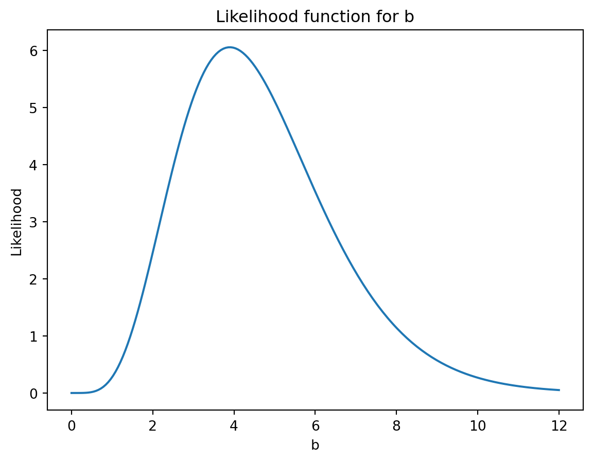
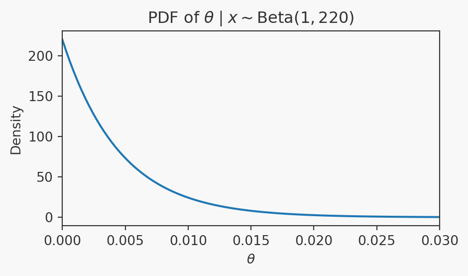
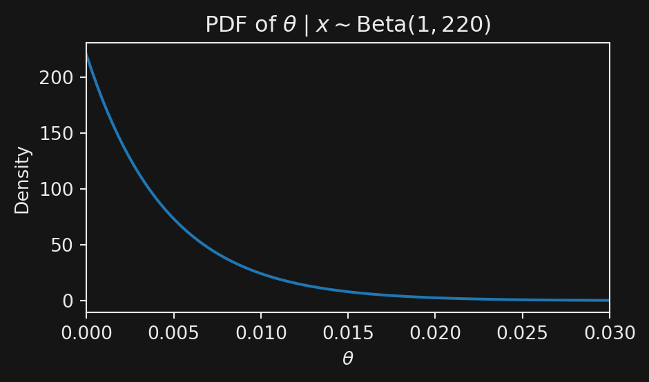

Question Bank
{
for (const el of allQuestions) {
// --- Tagbar (unchanged) ---
if (!el.querySelector('.tagbar')) {
const tags = (el.dataset.tags || "").split(/\s+/).filter(Boolean);
const bar = document.createElement('div');
bar.className = 'tagbar';
bar.append(...tags.map(t => Object.assign(document.createElement('span'), {
className: 'tag', textContent: t
})));
el.appendChild(bar);
}
// --- Difficulty peppers in header (RHS) ---
const header = el.querySelector('.callout-header');
if (header && !header.querySelector('.difficulty-peppers')) {
const level = Number(el.dataset.difficulty ?? 0);
// Always show, but only add peppers if >0
const span = document.createElement('span');
span.className = `difficulty-peppers level-${level}`;
span.setAttribute('aria-label', `Difficulty ${level}`);
span.textContent = level > 0 ? `(${ "🌶".repeat(level) })` : "( )";
header.appendChild(span);
}
}
return html`` // silence
}viewof typed = {
// --- DOM
const wrapper = html`<div class="token-autocomplete"></div>`;
const labelEl = html`<label class="token-label">Filter by tags (type, space-separated):</label>`;
const input = html`<input class="token-input" type="text" placeholder="e.g. bayes probability">`;
wrapper.append(labelEl, input);
// --- PORTAL: suggestions list lives at document.body so it can overlay everything
const list = html`<div class="token-suggestions" role="listbox" hidden></div>`;
document.body.appendChild(list);
// Make sure it floats above all content
list.style.position = "fixed";
list.style.zIndex = "9999"; // high z-index to overlay everything
// --- value plumbing
Object.defineProperty(wrapper, "value", {
get() { return input.value; },
set(v) { input.value = v ?? ""; }
});
// --- helpers
const TAGS = () => (typeof allTags !== "undefined" ? allTags : []);
const tokens = () => input.value.split(/\s+/).filter(Boolean);
const lastToken = () => (input.value.match(/(?:^|\s)(\S*)$/)?.[1]) ?? "";
const pretty = t => t.replace(/-/g, " ").replace(/\b\w/g, c => c.toUpperCase());
// Position portal directly below the input, matching its width
const alignList = () => {
const r = input.getBoundingClientRect();
list.style.left = `${r.left}px`;
list.style.top = `${r.bottom + 4}px`;
list.style.width = `${r.width}px`;
};
// --- render suggestions
let selectedIndex = -1;
const applyActiveStyles = () => {
const items = Array.from(list.children);
items.forEach((el, i) => el.classList.toggle("active", i === selectedIndex));
};
function renderSuggestions() {
const q = lastToken().toLowerCase();
const already = new Set(tokens().map(s => s.toLowerCase()));
const tags = TAGS();
const candidates = q
? tags.filter(t => t.toLowerCase().startsWith(q) && !already.has(t.toLowerCase()))
: [];
list.innerHTML = "";
if (candidates.length === 0) { list.hidden = true; return; }
for (const t of candidates.slice(0, 8)) {
const item = html`<div class="token-suggestion" role="option" data-token="${t}">${pretty(t)}</div>`;
item.addEventListener("mousedown", (e) => { e.preventDefault(); acceptSuggestion(t); });
list.appendChild(item);
}
selectedIndex = -1;
applyActiveStyles();
list.hidden = false;
alignList(); // ensure correct position when shown
}
function commit() {
const parts = tokens();
input.value = parts.join(" ") + (parts.length ? " " : "");
wrapper.dispatchEvent(new Event("input", { bubbles: true }));
}
function acceptSuggestion(tag) {
const parts = input.value.split(/\s+/);
if (/\S/.test(input.value)) parts.pop(); // replace last token
const set = new Set(parts.filter(Boolean).map(s => s.toLowerCase()));
if (!set.has(tag.toLowerCase())) parts.push(tag);
input.value = parts.filter(Boolean).join(" ") + " ";
list.hidden = true;
commit();
input.focus();
}
function moveSelection(delta) {
const items = Array.from(list.children);
if (items.length === 0) return;
selectedIndex = (selectedIndex + delta + items.length) % items.length;
applyActiveStyles();
if (selectedIndex >= 0) items[selectedIndex].scrollIntoView({ block: "nearest" });
}
// --- events
input.addEventListener("input", renderSuggestions);
input.addEventListener("focus", () => { alignList(); }); // realign on focus
input.addEventListener("keydown", (e) => {
if (!list.hidden && (e.key === "ArrowDown" || e.key === "ArrowUp")) {
e.preventDefault(); moveSelection(e.key === "ArrowDown" ? +1 : -1); return;
}
if (e.key === "Enter") {
if (!list.hidden && selectedIndex >= 0) {
e.preventDefault();
const choice = list.children[selectedIndex]?.dataset.token;
if (choice) acceptSuggestion(choice);
} else {
commit();
}
} else if (e.key === "Escape") {
list.hidden = true;
}
});
// Delay blur to allow mousedown on suggestion to fire first
input.addEventListener("blur", () => {
setTimeout(() => { list.hidden = true; commit(); }, 200);
});
// Close when clicking outside (remember list is outside wrapper now)
const onDocClick = (e) => {
if (e.target !== input && !list.contains(e.target)) list.hidden = true;
};
document.addEventListener("click", onDocClick, true);
// Reposition on any scroll/resize (capture scrolls from nested containers)
const onViewportChange = () => { if (!list.hidden) alignList(); };
window.addEventListener("resize", onViewportChange, { passive: true });
window.addEventListener("scroll", onViewportChange, true);
// Initial alignment
queueMicrotask(alignList);
// Cleanup when the cell re-runs
wrapper.dispose = () => {
document.removeEventListener("click", onDocClick, true);
window.removeEventListener("resize", onViewportChange, { passive: true });
window.removeEventListener("scroll", onViewportChange, true);
list.remove();
};
// Initial render
renderSuggestions();
return wrapper;
}{
// Sync checkboxes to the committed text tokens
const lcMap = new Map(allTags.map(t => [t.toLowerCase(), t])); // lower → original
const typedNow = (typed || "").split(/\s+/).filter(Boolean).map(s => s.toLowerCase());
const selected = typedNow.map(s => lcMap.get(s)).filter(Boolean);
const el = viewof chosen;
if (el && Array.isArray(el.value)) {
// compare sets to avoid churn
const cur = new Set(el.value);
let equal = selected.length === cur.size && selected.every(v => cur.has(v));
if (!equal) {
el.value = selected;
el.dispatchEvent(new Event("input", {bubbles:true}));
}
}
return html``;
}{
const typedSet = new Set((typed || "").split(/\s+/).filter(Boolean));
const chosenSet = new Set(chosen || []);
const required = new Set([...typedSet, ...chosenSet]); // AND over tags
const chosenLv = new Set(levels || []); // allowed levels
let shown = 0;
for (const el of allQuestions) {
// tags check
const elTags = new Set((el.dataset.tags || "").split(/\s+/).filter(Boolean));
const passTags = required.size === 0 || [...required].every(t => elTags.has(t));
// difficulty check (0 default)
const level = Number(el.dataset.difficulty ?? 0);
const passDiff = chosenLv.has(level);
const show = passTags && passDiff;
el.style.display = show ? "" : "none";
if (show) shown += 1;
}
return html`<div><strong>Showing ${shown}</strong> of ${allQuestions.length} questions.</div>`
}
ImportantProbability of heads
A fair coin is tossed 10 times. What is the probability of exactly 6 heads?
Solution
Work it via the Binomial: \mathrm{Pr}(X=6)=\binom{10}{6} (1/2)^{10}.
ImportantNewspaper subscriptions
In a certain city, 50\% of families subscribe to the morning newspaper, 65\% subscribe to the afternoon newspaper, and 30\% subscribe to both.
What proportion of families subscribe to at least one newspaper?
Solution
Let M = “morning” and A = “afternoon”.
By the addition rule of probability:
\mathrm{Pr}(M \cup A) \;=\; \mathrm{Pr}(M) + \mathrm{Pr}(A) - \mathrm{Pr}(M \cap A).
Substituting:
0.5 + 0.65 - 0.3 \;=\; 0.85.
So, 85\% of families subscribe to at least one newspaper.
ImportantNormal Data MLE
Let X_1,\dots,X_n \stackrel{iid}{\sim} \mathcal{N}(\mu,1). Find the MLE of \mu.
Solution
The likelihood is
L(\mu ; \underline{x}) = \mathrm{Pr}od_{i=1}^n \frac{1}{\sqrt{2\pi}} \exp\!\left(-\tfrac{1}{2}(x_i - \mu)^2\right) = (2\pi)^{-n/2} \exp\left( -\frac{1}{2}\sum_{i=1}^n (x_i - \mu)^2 \right) .
Taking logs:
\ell(\mu) = -\tfrac{n}{2}\log(2\pi) - \tfrac{1}{2}\sum_{i=1}^n (x_i - \mu)^2.
Differentiate with respect to \mu:
\frac{\partial \ell}{\partial \mu} = \sum_{i=1}^n (x_i - \mu).
Setting equal to 0:
\sum_{i=1}^n (x_i - \mu) = 0 \quad\Longrightarrow\quad \hat\mu = \frac{1}{n}\sum_{i=1}^n x_i = \bar X.
So the MLE of \mu is the sample mean \bar X.
ImportantConverting mean and standard deviation
October temperatures in Newcastle (daily maximum) have population mean 13^\circC and population standard deviation 3^\circC.
What would the population mean and standard deviation be if temperature was measured in ^\circF?
Note: If X is in ^\circC then Y = 1.8X + 32 is in ^\circF.
Solution
Using linearity of expectation:
\mathrm{E}[Y] \;=\; 1.8\,\mathrm{E}[X] + 32 \;=\; 1.8 \times 13 + 32 \;=\; 55.4^\circ \text{F}.
For the standard deviation, the shift does not matter and the scale multiplies:
\mathrm{SD}(Y) \;=\; 1.8 \, \mathrm{SD}(X) \;=\; 1.8 \times 3 \;=\; 5.4^\circ \text{F}.
ImportantPDF, normalisation constant, and CDF
The random variable X has PDF f(x) = \begin{cases} kx(1-x), & 0 \leq x \leq 1, \\ 0, & \text{otherwise}, \end{cases} where k is a constant.
- Find the value of k.
- Roughly sketch f(x). State, without calculation, the value of \mathrm{E}[X].
- Find and roughly sketch the CDF F(x) = \mathrm{Pr}(X \leq x).
Solution
a. Since the area under a PDF is 1: 1 = \int_{-\infty}^\infty f(x)\,dx = \int_0^1 k(x - x^2)\,dx = k \left[ \tfrac{x^2}{2} - \tfrac{x^3}{3} \right]_0^1 = \tfrac{k}{6}.
So k=6.
b. The PDF is symmetric about x = \tfrac{1}{2}, so \mathrm{E}[X] = \tfrac{1}{2}.
c. For 0 \leq x \leq 1: F(x) = \int_0^x 6(t - t^2)\,dt = 6\left[\tfrac{t^2}{2} - \tfrac{t^3}{3}\right]_0^x = x^2(3 - 2x).
So the full CDF is: F(x) = \begin{cases} 0, & x < 0, \\ x^2(3 - 2x), & 0 \leq x \leq 1, \\ 1, & x > 1. \end{cases}
xs = d3.range(-0.1, 1.1, 0.01)
// PDF
PDF = xs.map(x => ({
x: x,
y: (x >= 0 && x <= 1) ? 6*x*(1-x) : 0,
which: "PDF f(x)"
}))
// CDF
CDF = xs.map(x => {
let y;
if (x < 0) y = 0;
else if (x > 1) y = 1;
else y = x**2 * (3 - 2*x);
return {x: x, y: y, which: "CDF F(x)"};
})
viewof chart = Plot.plot({
height: 300,
width: 500,
style: { background: "var(--plot-panel-bg)",
fontSize: 14,
fontFamily: bodyFont, },
y: {domain: [0,1.8]},
marks: [
Plot.line(PDF, {x: "x", y: "y", stroke: "steelblue"}),
Plot.line(CDF, {x: "x", y: "y", stroke: "orange"}),
Plot.ruleY([0]),
],
color: {legend: true}
})
ImportantLinear combinations of independent random variables
Suppose that X_1 and X_2 are independent random variables with
\mathrm{E}[X_1] = 4, \mathrm{Var}(X_1) = 5, \mathrm{E}[X_2] = 3, \mathrm{Var}(X_2) = 1.
Let
Y_1 = 2X_1 + X_2, \qquad Y_2 = X_1 - 2X_2.
Find:
- \mathrm{E}[Y_1], \ \mathrm{Var}(Y_1)
- \mathrm{E}[Y_2], \ \mathrm{Var}(Y_2)
- \mathrm{Cov}(Y_1,Y_2) and the correlation between Y_1 and Y_2.
Solution
a.
\mathrm{E}[Y_1] = 2\mathrm{E}[X_1] + \mathrm{E}[X_2] = 2 \times 4 + 3 = 11.
\mathrm{Var}(Y_1) = 4\mathrm{Var}(X_1) + \mathrm{Var}(X_2)
= 4 \times 5 + 1 = 21.
b.
\mathrm{E}[Y_2] = \mathrm{E}[X_1] - 2\mathrm{E}[X_2] = 4 - 6 = -2.
\mathrm{Var}(Y_2) = \mathrm{Var}(X_1) + 4\mathrm{Var}(X_2)
= 5 + 4 \times 1 = 9.
c.
\begin{align*} \mathrm{Cov}(Y_1,Y_2) &= \mathrm{Cov}(2X_1+X_2, \, X_1-2X_2) \\ &= 2\mathrm{Var}(X_1) - 2\mathrm{Var}(X_2) + (-4+1)\mathrm{Cov}(X_1,X_2). \end{align*}
Since X_1 and X_2 are independent, \mathrm{Cov}(X_1,X_2)=0. So \mathrm{Cov}(Y_1,Y_2) = 2 \times 5 - 2 \times 1 = 8.
Finally, the correlation is \mathrm{Corr}(Y_1,Y_2) = \frac{\mathrm{Cov}(Y_1,Y_2)}{\sqrt{\mathrm{Var}(Y_1)\mathrm{Var}(Y_2)}} = \frac{8}{\sqrt{21 \times 9}} \approx 0.582.
ImportantLinear combinations of dependent random variables
Suppose that X_1 and X_2 are dependent random variables with
\mathrm{E}[X_1] = 4, \mathrm{Var}(X_1) = 5, \mathrm{E}[X_2] = 3, \mathrm{Var}(X_2) = 1
and
\mathrm{Cov}(X_1, X_2) = 2.
Let
Y_1 = 2X_1 + X_2, \qquad Y_2 = X_1 - 2X_2.
Find:
- \mathrm{E}[Y_1], \ \mathrm{Var}(Y_1)
- \mathrm{E}[Y_2], \ \mathrm{Var}(Y_2)
- \mathrm{Cov}(Y_1,Y_2) and the correlation between Y_1 and Y_2.
Solution
a.
\mathrm{E}[Y_1] = 2\mathrm{E}[X_1] + \mathrm{E}[X_2] = 11.
\begin{align*} \mathrm{Var}(Y_1) &= \mathrm{Var}(2X_1) + \mathrm{Var}(X_2) + 2\mathrm{Cov}(2X_1,X_2) \\ &= 4\mathrm{Var}(X_1) + \mathrm{Var}(X_2) + 4\mathrm{Cov}(X_1,X_2) \\ &= 4\times 5 + 1 + 4\times 2 = 29. \end{align*}
b.
\mathrm{E}[Y_2] = \mathrm{E}[X_1] - 2\mathrm{E}[X_2] = -2.
\begin{align*} \mathrm{Var}(Y_2) &= \mathrm{Var}(X_1) + \mathrm{Var}(2X_2) - 2\mathrm{Cov}(X_1,2X_2) \\ &= \mathrm{Var}(X_1) + 4\mathrm{Var}(X_2) - 4\mathrm{Cov}(X_1,X_2) \\ &= 5 + 4 - 8 = 1. \end{align*}
c.
\begin{align*} \mathrm{Cov}(Y_1,Y_2) &= \mathrm{Cov}(2X_1+X_2, \, X_1-2X_2) \\ &= 2\mathrm{Var}(X_1) - 2\mathrm{Var}(X_2) + (-4+1)\mathrm{Cov}(X_1,X_2) \\ &= 10 - 2 - 6 = 2. \end{align*}
So the correlation is \mathrm{Corr}(Y_1,Y_2) = \frac{\mathrm{Cov}(Y_1,Y_2)}{\sqrt{\mathrm{Var}(Y_1)\mathrm{Var}(Y_2)}} = \frac{2}{\sqrt{29 \times 1}} \approx 0.371.
ImportantMinimiser of \mathrm{E}[(X-c)^2]
Suppose that X is a continuous random variable. Show that \mathrm{E}[(X-c)^2] is minimised when c is the population mean. State any assumptions.
Solution
As X is continuous, \mathrm{E}[(X-c)^2] = \int_{-\infty}^\infty (x-c)^2 f(x)\,dx.
We assume we can interchange differentiation with respect to c and integration with respect to x. Then \frac{\partial}{\partial c}\,\mathrm{E}[(X-c)^2] = \mathrm{E}\!\left[\frac{\partial}{\partial c}(X-c)^2\right] = \int_{-\infty}^\infty \frac{\partial}{\partial c}(x-c)^2 f(x)\,dx.
Differentiating: \frac{\partial}{\partial c}\,\mathrm{E}[(X-c)^2] = -2\int_{-\infty}^\infty (x-c) f(x)\,dx = -2\{\mathrm{E}[X] - c\}.
This derivative is zero when c = \mathrm{E}[X].
The second derivative is positive, so this is indeed a minimum.
ImportantMinimiser of \mathrm{E}[|X-c|]
Suppose that X is a continuous random variable. Show that \mathrm{E}[|X-c|] is minimised when c is the population median. State any assumptions.
Hint: The derivative of |X-c| with respect to c is -1 when x>c and +1 when x<c.
Solution
We assume the technical conditions allowing us to interchange differentiation with respect to c and integration with respect to x.
Using the hint: \frac{\partial}{\partial c}\,\mathrm{E}[|X-c|] = \mathrm{E}\!\left[\frac{\partial}{\partial c}|X-c|\right] = \mathrm{E}[I(X \leq c) - I(X > c)], where I(\cdot) is the indicator function.
So, \frac{\partial}{\partial c}\,\mathrm{E}[|X-c|] = \mathrm{Pr}(X \leq c) - \mathrm{Pr}(X > c).
Since \mathrm{Pr}(X > c) = 1 - \mathrm{Pr}(X \leq c), this simplifies to \frac{\partial}{\partial c}\,\mathrm{E}[|X-c|] = 2\mathrm{Pr}(X \leq c) - 1.
This derivative is zero when \mathrm{Pr}(X \leq c) = \tfrac{1}{2}, i.e. when c is the median of the distribution of X.
(Aside: this argument ignores the non-differentiability of |X-c| at x=c — a more careful treatment requires subgradients.)
ImportantBeta Conjugacy
With a Beta prior p\sim \mathrm{Beta}(\alpha,\beta) and X \mid p \sim\mathrm{Bin}(n,p), show the posterior is p \mid x\sim \mathrm{Beta}(\alpha+x,\beta+n-x).
Solution
Intuition.
The Beta prior has the same algebraic form as the Binomial likelihood in p: powers of p and (1-p). Multiplying them keeps the form, so the posterior is also Beta (this is conjugacy).
Formal derivation.
Prior:
\pi(p)=\mathrm{Beta}(p\mid \alpha,\beta)
=\frac{1}{B(\alpha,\beta)}\,p^{\alpha-1}(1-p)^{\beta-1},\qquad 0<p<1.
Likelihood (for x successes in n trials): L(p; x)\mathrm{Pr}opto p^{x}(1-p)^{\,n-x}.
Posterior (up to proportionality): \pi(p\mid x)\ \mathrm{Pr}opto\ \pi(p)\,L(p\mid x) \ \mathrm{Pr}opto\ p^{\alpha-1+x}\,(1-p)^{\beta-1+(n-x)}.
This is in the form of the Beta distribution with updated parameters: p\mid x \sim \mathrm{Beta}\big(\alpha+x,\ \beta+n-x\big).
ImportantBinomial Probabilities
Suppose X \sim \mathrm{Bin}(n,p).
When n=6 and p=0.3, find, either by hand or using R or Python, each of:
- \mathrm{Pr}(X < 2)
- \mathrm{Pr}(1 < X \leq 2)
- \mathrm{Pr}(X > 1)
- \mathrm{Pr}(X < 2)
When n=10 and p=0.75, find the probability that X is within one of its population mean.
Solution
a.
As X is binomial, it can only take the values 0,1,2,\ldots,6.
i. \mathrm{Pr}(X<2) = \mathrm{Pr}(X=0) + \mathrm{Pr}(X=1).
\mathrm{Pr}(X=0) = \binom{6}{0} (0.3)^0 (0.7)^6 = 0.7^6.
\mathrm{Pr}(X=1) = \binom{6}{1} (0.3)^1 (0.7)^5 = 6 \times 0.3 \times 0.7^5.
So, \mathrm{Pr}(X<2) = 0.7^6 + 6 \times 0.3 \times 0.7^5 \approx 0.4202.
ii.
\mathrm{Pr}(1 < X \leq 2) = \mathrm{Pr}(X=2)
= \binom{6}{2} (0.3)^2 (0.7)^4
= 15 \times 0.09 \times 0.2401
\approx 0.3241.
iii.
\mathrm{Pr}(X > 1) = 1 - \mathrm{Pr}(X \leq 1) = 1 - \mathrm{Pr}(X<2).
So, \mathrm{Pr}(X>1) = 1 - 0.4202 = 0.5798.
b.
For X \sim \mathrm{Bin}(10,0.75):
- The mean is \mathrm{E}[X] = np = 10 \times 0.75 = 7.5.
- “Within one of the mean” means 6.5 \leq X \leq 8.5.
Since X is integer-valued, this corresponds to X \in \{7,8\}.
\mathrm{Pr}(6.5 \leq X \leq 8.5) = \mathrm{Pr}(X=7) + \mathrm{Pr}(X=8).
\mathrm{Pr}(X=7) = \binom{10}{7}(0.75)^7(0.25)^3,
\mathrm{Pr}(X=8) = \binom{10}{8}(0.75)^8(0.25)^2.
Numerically, \mathrm{Pr}(X=7) \approx 0.2503, \quad \mathrm{Pr}(X=8) \approx 0.2816.
So, \mathrm{Pr}(6.5 \leq X \leq 8.5) \approx 0.2503 + 0.2816 = 0.5319.
In R or Python:
Show code
from math import comb
from scipy.stats import binom
# Part (a): n=6, p=0.3
n, p = 6, 0.3
pr_less_2 = binom.cdf(1, n, p) # P(X < 2)
pr_eq_2 = binom.pmf(2, n, p) # P(X = 2)
pr_greater_1 = 1 - pr_less_2 # P(X > 1)
# Part (b): n=10, p=0.75
n, p = 10, 0.75
pr_within_mean = binom.pmf(7, n, p) + binom.pmf(8, n, p)
print(
f"Pr(X < 2) = {pr_less_2:.4f}\n"
f"Pr(1 < X <= 2) = {pr_eq_2:.4f}\n"
f"Pr(X > 1) = {pr_greater_1:.4f}\n"
f"Pr(X within 1 of mean) = {pr_within_mean:.4f}"
)Pr(X < 2) = 0.4202
Pr(1 < X <= 2) = 0.3241
Pr(X > 1) = 0.5798
Pr(X within 1 of mean) = 0.5318#| echo: true
#| code-fold: true
#| code-summary: "Show code"
# Part (a): n=6, p=0.3
n <- 6; p <- 0.3
pr_less_2 <- pbinom(1, n, p) # P(X < 2)
pr_eq_2 <- dbinom(2, n, p) # P(X = 2)
pr_greater_1 <- 1 - pr_less_2 # P(X > 1)
# Part (b): n=10, p=0.75
n <- 10; p <- 0.75
pr_within_mean <- dbinom(7, n, p) + dbinom(8, n, p)
cat(
"Pr(X < 2) =", round(pr_less_2,4), "\n",
"Pr(1 < X <= 2) =", round(pr_eq_2,4), "\n",
"Pr(X > 1) =", round(pr_greater_1,4), "\n",
"Pr(X within 1 of mean) =", round(pr_within_mean,4), "\n"
)
ImportantMean and Standard Deviation of Linear Combinations
Suppose X \sim \mathcal{N}(3,2) and, independently, Y \sim \mathcal{N}(-2,7).
Find the population mean and standard deviation of:
- 3X + 2
- 5 - Y
- 3X + 7 - Y
Solution
a.
\mathrm{E}[3X+2] = 3\mathrm{E}[X] + 2 = 3 \times 3 + 2 = 11.
\mathrm{Var}(3X+2) = 3^2 \mathrm{Var}(X) = 9 \times 2 = 18.
So the standard deviation is \sqrt{18} \approx 4.2426.
b.
\mathrm{E}[5-Y] = 5 - \mathrm{E}[Y] = 5 - (-2) = 7.
\mathrm{Var}(5-Y) = (-1)^2 \mathrm{Var}(Y) = 1 \times 7 = 7.
So the standard deviation is \sqrt{7} \approx 2.6458.
(c)
\mathrm{E}[3X+7-Y] = 3\mathrm{E}[X] + 7 - \mathrm{E}[Y] = 3 \times 3 + 7 - (-2) = 18.
Since X and Y are independent, \mathrm{Var}(3X+7-Y) = 3^2\mathrm{Var}(X) + (-1)^2 \mathrm{Var}(Y) = 9 \times 2 + 1 \times 7 = 25.
So the standard deviation is \sqrt{25} = 5.
ImportantExpectation with a Poisson Distribution
The number of breakdowns per week in a computer cluster is a random variable Y having a Poisson distribution with population mean \mu.
The weekly cost of repairing breakdowns is
C = 3Y + Y^2.
Find \mathrm{E}[C].
Solution
We have \mathrm{E}[C] = \mathrm{E}[3Y + Y^2] = 3\mathrm{E}[Y] + \mathrm{E}[Y^2].
Since Y \sim \mathrm{Poisson}(\mu):
- \mathrm{E}[Y] = \mu
- \mathrm{Var}(Y) = \mu
- Recall that \mathrm{Var}(Y) = \mathrm{E}[Y^2] - (\mathrm{E}[Y])^2, so \mathrm{E}[Y^2] = \mu + \mu^2.
Therefore, \mathrm{E}[C] = 3\mu + (\mu + \mu^2) = 4\mu + \mu^2.
ImportantDistribution of a Squared Normal Variable
Suppose Z \sim \mathcal{N}(0,1).
Find the PDF of Y = Z^2.
Hint: start by finding a formula for the CDF F_Y(y) = \mathrm{Pr}(Y \leq y) for any y > 0.
Solution
For y > 0: F_Y(y) = \mathrm{Pr}(Y \leq y) = \mathrm{Pr}(Z^2 \leq y).
This is equivalent to F_Y(y) = \mathrm{Pr}(-\sqrt{y} \leq Z \leq \sqrt{y}) = \mathrm{Pr}(Z \leq \sqrt{y}) - \mathrm{Pr}(Z \leq -\sqrt{y}).
Using the standard normal CDF \Phi, F_Y(y) = \Phi(\sqrt{y}) - \Phi(-\sqrt{y}).
Differentiate to find the PDF:
f_Y(y) = \frac{\partial}{\partial y} \Big[ \Phi(\sqrt{y}) - \Phi(-\sqrt{y}) \Big].
By the chain rule: f_Y(y) = \phi(\sqrt{y}) \cdot \frac{1}{2\sqrt{y}} + \phi(-\sqrt{y}) \cdot \frac{1}{2\sqrt{y}}.
Since \phi (the standard normal PDF) is symmetric, f_Y(y) = \frac{1}{\sqrt{y}} \, \phi(\sqrt{y}).
Substitute \phi(z) = \tfrac{1}{\sqrt{2\pi}} e^{-z^2/2}: f_Y(y) = \frac{1}{\sqrt{2\pi y}} e^{-y/2}, \quad y > 0.
For y \leq 0, f_Y(y)=0.
Aside.
This is exactly the PDF of a \chi^2_1 distribution.
ImportantCustomer Waiting Times
Customer waiting times at a call centre can be assumed to be Gamma Gamma random variables with mean 3 minutes and standard deviation 2 minutes.
What proportion of customers are expected to wait more than 5 minutes?
Hint: you will need R or Python for this.
Solution
Let the waiting time be X \sim \mathrm{Gamma}(\alpha, \lambda), with shape \alpha and rate \lambda.
From the formulas:
\mathrm{E}[X] = \frac{\alpha}{\lambda},
\qquad \mathrm{Var}(X) = \frac{\alpha}{\lambda^2}.
We are told: \mathrm{E}[X] = 3, \qquad \mathrm{SD}[X] = 2 \ \Rightarrow \ \mathrm{Var}(X) = 4.
So: \frac{\alpha}{\lambda} = 3, \qquad \frac{\alpha}{\lambda^2} = 4.
Divide the second equation by the first: \frac{\alpha/\lambda^2}{\alpha/\lambda} = \frac{4}{3} \quad \Rightarrow \quad \frac{1}{\lambda} = \frac{4}{3}.
Hence: \lambda = 0.75, \quad \alpha = 3\lambda = 2.25.
We want: \mathrm{Pr}(X > 5) = 1 - F_X(5).
ImportantExact Binomial Confidence Interval (Clopper–Pearson)
Suppose we have a single Binomial Binomial observation
X \mid p \sim \mathrm{Binomial}(n,p).
Following the general strategy General Recipe, construct an exact two-sided (1-\alpha) confidence interval for p.
Note on exact (discrete) coverage. In the discrete case, an “exact” interval [L(X), U(X)] means, for every 0\leq p \leq 1,
\operatorname{Pr}\!\big(L(X) \leq p \leq U(X)\big) \ge 1-\alpha, \quad\text{where }X \sim \text{Binomial}(n,p).
Because of discreteness, equality for all p is impossible; the interval is conservative.
Solution
1. Choose a statistic. Take T=X. Its sampling distribution is
X \mid p \sim \mathrm{Binomial}(n,p),\qquad f(x\mid p)=\binom{n}{x}p^x(1-p)^{n-x}.
2–3. Form a pivot via tail probabilities and fix central mass. Denote F_p(y) = \mathrm{Pr}(Y \leq y) where Y\sim \mathrm{Binomial}(n,p) and denote \mathrm{Pr}_{p}(X\le x) = F_p(x). For a given observed x, define endpoints by equating the two tails to \alpha/2:
\mathrm{Pr}_{p_L}(X\le x-1)=\frac{\alpha}{2},\qquad \mathrm{Pr}_{p_U}(X\ge x+1)=\frac{\alpha}{2}.
(Edge cases: if x=0 set p_L=0; if x=n set p_U=1.)
4. Invert (Clopper–Pearson). These tail equalities are exactly equivalent to Beta quantiles, giving closed-form endpoints:
\boxed{\; p_L = B^{-1}\!\left(\tfrac{\alpha}{2};\, x,\; n-x+1\right),\qquad p_U = B^{-1}\!\left(1-\tfrac{\alpha}{2};\, x+1,\; n-x\right)\; }
where B^{-1}(q;a,b) is the q-quantile of \mathrm{Beta}(a,b). With the edge-case conventions above:
p_L= \begin{cases} 0, & x=0,\\ B^{-1}\!\left(\tfrac{\alpha}{2};\, x,\; n-x+1\right), & x\ge 1, \end{cases} \quad p_U= \begin{cases} B^{-1}\!\left(1-\tfrac{\alpha}{2};\, x+1,\; n-x\right), & x\le n-1,\\ 1, & x=n. \end{cases}
We obtain the Clopper–Pearson interval [p_L,\,p_U], which is an exact (conservative) two-sided (1-\alpha) CI for p.
ImportantProbability Integral Transform
Suppose X is a continuous random variable with CDF F(x).
Define the random variable
U = F(X),
that is, the CDF evaluated at a random argument.
Show that U \sim U(0,1).
Aside. This result is fundamental in simulation: if we can generate uniform random variables U \sim U(0,1), then we can simulate X by setting X = F^{-1}(U).
Solution
Because F(\cdot) is continuous and strictly increasing, its inverse F^{-1}(\cdot) exists and is also strictly increasing.
Define the CDF of U as G(u) = \operatorname{Pr}(U \leq u).
Since U = F(X) always lies in [0,1], we have: G(u) = 0 \quad \text{for } u \leq 0, \qquad G(u) = 1 \quad \text{for } u \geq 1.
Now consider u \in (0,1): G(u) = \operatorname{Pr}(U \leq u) = \operatorname{Pr}(F(X) \leq u).
Because F is increasing, \operatorname{Pr}(F(X) \leq u) = \operatorname{Pr}(X \leq F^{-1}(u)).
By definition of the CDF F, \operatorname{Pr}(X \leq F^{-1}(u)) = F(F^{-1}(u)) = u.
Thus the CDF of U is G(u) = \begin{cases} 0, & u \leq 0, \\ u, & 0 < u \leq 1, \\ 1, & u > 1. \end{cases}
This is exactly the CDF of the \mathrm{Uniform}(0,1) distribution.
Therefore,
U \sim U(0,1).
ImportantMoment Generating Function of the Exponential
We have seen that properties of a random variable X can be described by the CDF, PMF, or PDF.
Another way is through the moment generating function (MGF) M(t), defined by
M(t) = \mathrm{E}[e^{tX}],
provided the expectation is finite (which is not always the case).
If the MGF exists, it is unique: two random variables have the same MGF if and only if they have the same distribution.
Suppose X \sim \mathrm{Exp}(\lambda), with PDF f(x) = \lambda e^{-\lambda x}, \quad x \geq 0.
Show that the MGF of X is M(t) = \frac{\lambda}{\lambda - t}, \qquad 0 \leq t < \lambda.
Solution
Choose t with 0 \leq t < \lambda to ensure convergence. Then M(t) = \mathrm{E}[e^{tX}] = \int_0^\infty e^{tx} \lambda e^{-\lambda x} \, dx.
Combine exponents: M(t) = \int_0^\infty \lambda e^{-(\lambda - t)x} \, dx.
Factor out (\lambda - t): M(t) = \frac{\lambda}{\lambda - t} \int_0^\infty (\lambda - t) e^{-(\lambda - t)x} \, dx.
But the integrand is the PDF of \mathrm{Exp}(\lambda - t), so the integral equals 1.
Therefore: M(t) = \frac{\lambda}{\lambda - t}, \qquad 0 \leq t < \lambda.
ImportantEstimating \lambda from Independent Poisson Samples
Suppose X \sim \mathrm{Poisson}(\lambda) and, independently, Y \sim \mathrm{Poisson}(2\lambda).
Classify the following as parameters, statistics, or neither:
- X + 2Y
- \hat{\lambda} = (X+Y)/3
- \lambda / \hat{\lambda}
- \operatorname{Pr}(\lambda > \hat{\lambda})
- X + 2Y
Find the bias and MSE of each of the following estimators of \lambda. Which would you recommend?
- X
- Y-X
- (X+Y)/3
- X
Consider a general estimator w_1 X + w_2 Y. What values of w_1 and w_2 would you recommend?
Solution
a. Classification.
- A statistic is a function of data (random variables).
- A parameter depends only on the population.
- Neither means it involves both.
- X+2Y: Statistic
- (X+Y)/3: Statistic
- \lambda/\hat{\lambda}: Neither
- \operatorname{Pr}(\lambda > \hat{\lambda}): Parameter (depends on the distribution, not directly observable)
b. Bias and MSE.
Recall: for Poisson(\mu), \mathrm{E}[X]=\mathrm{Var}(X)=\mu.
- X \sim \mathrm{Poisson}(\lambda), so \mathrm{E}[X]=\lambda, \mathrm{Var}(X)=\lambda.
- Y \sim \mathrm{Poisson}(2\lambda), so \mathrm{E}[Y]=2\lambda, \mathrm{Var}(Y)=2\lambda.
- Independence: \mathrm{Var}(aX+bY) = a^2\mathrm{Var}(X) + b^2\mathrm{Var}(Y).
\text{Bias}(\hat{\theta}) = \mathrm{E}[\hat{\theta}] - \lambda, \qquad \mathrm{MSE}(\hat{\theta}) = \mathrm{Var}(\hat{\theta}) + \text{Bias}(\hat{\theta})^2.
X:
\mathrm{E}[X] = \lambda \;\Rightarrow\; \text{Bias}=0.
\mathrm{MSE} = \mathrm{Var}(X) = \lambda.Y-X:
\mathrm{E}[Y-X] = 2\lambda - \lambda = \lambda \;\Rightarrow\; \text{Bias}=0.
\mathrm{Var}(Y-X) = \mathrm{Var}(Y)+\mathrm{Var}(X) = 2\lambda + \lambda = 3\lambda.
\mathrm{MSE}=3\lambda.(X+Y)/3:
\mathrm{E}[(X+Y)/3] = (\lambda+2\lambda)/3 = \lambda \;\Rightarrow\; \text{Bias}=0.
\mathrm{Var}[(X+Y)/3] = \tfrac{1}{9}(\lambda+2\lambda) = \tfrac{\lambda}{3}.
\mathrm{MSE} = \tfrac{\lambda}{3}.
Recommendation: (X+Y)/3 has the smallest MSE.
c. General estimator w_1X + w_2Y.
Expectation: \mathrm{E}[w_1X+w_2Y] = (w_1 + 2w_2)\lambda.
For unbiasedness, require w_1+2w_2=1, i.e. w_1=1-2w_2.
Variance:
\begin{align*} \mathrm{Var}((1-2w_2)X + w_2Y) &= (1-2w_2)^2\lambda + 2w_2^2\lambda \\ &= (6w_2^2 - 4w_2 + 1)\lambda. \end{align*}
This quadratic in w_2 is minimised at w_2=\tfrac{1}{3}, giving w_1=\tfrac{1}{3}.
Thus the optimal unbiased estimator is: \hat{\lambda} = \tfrac{1}{3}(X+Y), matching part (b).
ImportantBias, Variance, and MSE of Estimators
A random variable X has expected value \mathrm{E}[X] = 2\theta + 6 and variance \mathrm{Var}(X) = 2\theta^2.
A random variable Y has expected value \mathrm{E}[Y] = 3\theta - 12 and variance \mathrm{Var}(Y) = 6\theta^2 + 1.
Assume X and Y are independent.
Compute the bias, variance, and MSE of the following estimators of \theta:
- \hat{\theta}_1 = 5X - 3Y - 65
- \hat{\theta}_2 = (X+Y)/5
- \hat{\theta}_3 = Y/6 + X/4 + 1/2
- \hat{\theta}_1 = 5X - 3Y - 65
Let \hat{\theta} = aX + bY + c be an estimator of \theta. Derive a system of linear equations involving a, b, c that ensures \hat{\theta} is unbiased for any value of \theta.
Suppose \hat{\theta} = aX + bY + c is an unbiased estimator of \theta. Find the values of a, b, c that minimise the mean squared error of \hat{\theta} when the true value of \theta = 1.
Solution
a. Bias, variance, and MSE.
\text{Bias}(\hat{\theta}) = \mathrm{E}[\hat{\theta}] - \theta, \qquad \text{MSE}(\hat{\theta}) = \mathrm{Var}(\hat{\theta}) + \text{Bias}(\hat{\theta})^2.
Using independence of X and Y:
\mathrm{Var}(aX+bY+c) = a^2\mathrm{Var}(X) + b^2\mathrm{Var}(Y).
\begin{array}{c|c|c|c|c} \text{Estimator } \hat{\theta} & \mathrm{E}[\hat{\theta}] & \mathrm{Var}[\hat{\theta}] & \text{Bias} & \text{MSE} \\ \hline 5X - 3Y - 65 & \theta+1 & 104\theta^2+9 & 1 & 104\theta^2+10 \\ (X+Y)/5 & \theta-\tfrac{6}{5} & \tfrac{8\theta^2+1}{25} & -\tfrac{6}{5} & \tfrac{8\theta^2+37}{25} \\ Y/6 + X/4 + 1/2 & \theta & \tfrac{7}{24}\theta^2 + \tfrac{1}{36} & 0 & \tfrac{7}{24}\theta^2 + \tfrac{1}{36} \\ \end{array}
b. Unbiasedness condition.
\mathrm{E}[\hat{\theta}] = a\,\mathrm{E}[X] + b\,\mathrm{E}[Y] + c = a(2\theta+6) + b(3\theta-12) + c.
For unbiasedness: \mathrm{E}[\hat{\theta}] = \theta for all \theta.
So (2a+3b-1)\theta + (6a - 12b + c) = 0.
This gives the system: 2a+3b=1, \qquad 6a - 12b + c = 0.
c. Minimising MSE when \theta=1.
For an unbiased estimator, MSE = variance:
\mathrm{Var}[\hat{\theta}] = a^2 \mathrm{Var}(X) + b^2 \mathrm{Var}(Y) = 2a^2 \theta^2 + b^2(6\theta^2+1).
At \theta=1: \mathrm{Var}[\hat{\theta}] = 2a^2 + 7b^2.
From part (b): a = \tfrac{1-3b}{2}, c = 12b - 6a.
Substitute a=(1-3b)/2: \mathrm{Var}[\hat{\theta}] = 2\Big(\tfrac{1-3b}{2}\Big)^2 + 7b^2 = \tfrac{(1-3b)^2}{2} + 7b^2 = \tfrac{23}{2}b^2 - 3b + \tfrac{1}{2}.
Minimise by setting derivative =0:
23b - 3 = 0 \quad \Rightarrow \quad b = \tfrac{3}{23}.
Then a = \tfrac{1-3b}{2} = \tfrac{7}{23}, \qquad c = 12b - 6a = -\tfrac{6}{23}.
Final recommended estimator: \hat{\theta} = \frac{7X + 3Y - 6}{23}.
ImportantProperties of Poisson Estimators
Suppose that X_1, X_2, \ldots, X_n, for n \geq 1, are independent \mathrm{Poisson}(\lambda) random variables.
Two possible estimators of \lambda are: \hat{\lambda}_1 = \frac{1}{n} \sum_{i=1}^n X_i, \qquad \hat{\lambda}_2 = \frac{1}{n^2} \sum_{i=1}^n X_i.
Show that \hat{\lambda}_1 is unbiased but \hat{\lambda}_2 is not.
Show that \mathrm{Var}(\hat{\lambda}_1) = \frac{\lambda}{n}, \qquad \mathrm{Var}(\hat{\lambda}_2) = \frac{\lambda}{n^3}.
For each estimator, determine whether it can be shown to be consistent using its mean and variance.
Solution
a. Unbiasedness.
\mathrm{E}[\hat{\lambda}_1] = \frac{1}{n}\sum_{i=1}^n \mathrm{E}[X_i] = \frac{1}{n} \cdot n\lambda = \lambda.
So \hat{\lambda}_1 is unbiased.
\mathrm{E}[\hat{\lambda}_2] = \frac{1}{n^2}\sum_{i=1}^n \mathrm{E}[X_i] = \frac{1}{n^2} \cdot n\lambda = \frac{\lambda}{n}.
So \hat{\lambda}_2 is biased.
b. Variances.
Since X_i \sim \mathrm{Poisson}(\lambda), \mathrm{Var}(X_i) = \lambda.
\mathrm{Var}(\hat{\lambda}_1) = \frac{1}{n^2}\sum_{i=1}^n \mathrm{Var}(X_i) = \frac{1}{n^2} \cdot n\lambda = \frac{\lambda}{n}.
\mathrm{Var}(\hat{\lambda}_2) = \frac{1}{n^4}\sum_{i=1}^n \mathrm{Var}(X_i) = \frac{1}{n^4} \cdot n\lambda = \frac{\lambda}{n^3}.
c. Consistency.
- \hat{\lambda}_1: unbiased and \mathrm{Var}(\hat{\lambda}_1)\to 0 as n\to\infty, so \hat{\lambda}_1 is consistent.
- \hat{\lambda}_2: \mathrm{E}[\hat{\lambda}_2] = \lambda/n \to 0 as n\to\infty, so it does not converge to \lambda. Therefore it is not consistent.
ImportantMLE for the Gamma Distribution
Suppose that X_1,\ldots,X_n is random sample from a \mathrm{Gamma}(1, b) distribution.
Show that the log-likelihood takes the form \ell(b;\underline{x}) = n\log(b) - b\sum_{i=1}^n x_i.
Using R or Python, plot the likelihood function of b given the data x_1 = 0.043,\quad x_2 = 0.060,\quad x_3 = 0.011,\quad x_4 = 0.142,\quad x_5 = 1.027.
Derive the maximum likelihood estimate \hat{b} of b. You do not need to verify it is a maximum.
Solution
a. Likelihood and log-likelihood.
The PDF of the \mathrm{Gamma}(1,b) distribution is
f(x \mid b) = b e^{-bx}, \quad x > 0.
Thus
L(b;\underline{x}) = \prod_{i=1}^n f(x_i;b) = \prod_{i=1}^n b e^{-bx_i} = b^n \exp\!\left(-b\sum_{i=1}^n x_i\right).
Therefore
\ell(b;\underline{x}) = \log L(b;\underline{x}) = n\log(b) - b\sum_{i=1}^n x_i.
b. Plotting.
Show code
import numpy as np
import matplotlib.pyplot as plt
x = np.array([0.043, 0.060, 0.011, 0.142, 1.027])
n = len(x)
def likelihood(b):
return b**n * np.exp(-b * np.sum(x))
b_mesh = np.linspace(0, 12, 200)
lik_values = [likelihood(b) for b in b_mesh]
plt.plot(b_mesh, lik_values)
plt.xlabel("b")
plt.ylabel("Likelihood")
plt.title("Likelihood function for b")
plt.show()
#| echo: true
#| code-fold: true
#| code-summary: "Show code"
#| fig-align: center
x = c(0.043, 0.060, 0.011, 0.142, 1.027)
likelihood = function(b) {
n = length(x)
return(b^n * exp(-b * sum(x)))
}
b_mesh = seq(0, 12, length.out = 100)
plot(b_mesh, likelihood(b_mesh), type = "l",
xlab = "b", ylab = "Likelihood")c. Maximum likelihood estimate.
Differentiate the log-likelihood:
\frac{\partial}{\partial b}\ell(b;\underline{x}) = \frac{n}{b} - \sum_{i=1}^n x_i.
Set equal to 0:
\frac{n}{b} = \sum_{i=1}^n x_i \quad \Rightarrow \quad \hat{b} = \frac{1}{\bar{x}}.
So the MLE is \hat{b} = 1/\bar{x}.
ImportantDeriving the Student-t distribution
Let X_1,\ldots, X_n \stackrel{\text{i.i.d.}}{\sim} \mathcal{N}(\mu,\sigma^2). From Proposition 4.2 and Proposition 4.3, we saw that
- \bar{X} \sim \mathcal{N}(\mu, \sigma^2/n),
- \dfrac{(n-1)S^2}{\sigma^2} \;\sim\; \chi^2_{\,n-1}, and
- The sample variance S^2 was independent of the sample mean \bar{X}.
Derive the PDF of the random variable T = \frac{\bar{X} - \mu}{S / \sqrt{n}}.
Solution
Set Z \;=\; \frac{\bar{X}-\mu}{\sigma/\sqrt{n}} \sim \mathcal{N}(0,1), \qquad U \;=\; \frac{(n-1)S^2}{\sigma^2} \sim \chi^2_{\,n-1}, with Z independent of U. Then T \;=\; \frac{\sigma Z}{\sqrt{(\sigma^2 U)/(n-1)}} \;=\; \frac{Z}{\sqrt{U/\nu}}, \qquad \nu := n-1.
Conditional distribution. Conditioning on U=u, T \mid U=u \;=\; \frac{Z}{\sqrt{u/\nu}} \;\sim\; \mathcal{N}\!\left(0,\; \frac{\nu}{u}\right), so its conditional density is f_{T\mid U}(t\mid u) = \sqrt{\frac{u}{2\pi\nu}}\;\exp\!\left(-\frac{u}{2\nu}t^2\right), \qquad t\in\mathbb{R}.
Mixture over U. The marginal PDF of T is f_T(t) = \int_0^\infty f_{T\mid U}(t\mid u)\, f_U(u)\, \mathrm{d}u,
where f_U(u) = \dfrac{1}{2^{\nu/2}\Gamma(\nu/2)}\,u^{\nu/2-1} e^{-u/2} for u>0. Thus
\begin{align*} f_T(t) &= \int_0^\infty \left[\sqrt{\frac{u}{2\pi\nu}}\;e^{-\frac{u}{2\nu}t^2}\right] \left[\frac{1}{2^{\nu/2}\Gamma(\nu/2)}\,u^{\nu/2-1} e^{-u/2}\right] \mathrm{d}u \\ &= \frac{1}{\sqrt{2\pi\nu}\,2^{\nu/2}\Gamma(\nu/2)} \int_0^\infty u^{\frac{\nu+1}{2}-1} \exp\!\left\{-\frac{1}{2}\!\left(1+\frac{t^2}{\nu}\right)u\right\} \,\mathrm{d}u. \end{align*}
Use the Gamma integral \displaystyle \int_0^\infty u^{a-1} e^{-b u}\,\mathrm{d}u = \Gamma(a)\,b^{-a} with a=\frac{\nu+1}{2} and b=\frac{1}{2}\!\left(1+\frac{t^2}{\nu}\right):
\begin{align*} f_T(t) &= \frac{1}{\sqrt{2\pi\nu}\,2^{\nu/2}\Gamma(\nu/2)} \cdot \Gamma\!\left(\frac{\nu+1}{2}\right) \left[\frac{1}{2}\!\left(1+\frac{t^2}{\nu}\right)\right]^{-\frac{\nu+1}{2}} \\ &= \frac{\Gamma\!\left(\frac{\nu+1}{2}\right)}{\sqrt{\nu\pi}\,\Gamma\!\left(\frac{\nu}{2}\right)} \left(1+\frac{t^2}{\nu}\right)^{-\frac{\nu+1}{2}}, \qquad t\in\mathbb{R}. \end{align*}
This is the Student-t density with \nu=n-1 degrees of freedom: T \sim t_\nu \quad \text{with} \quad f_T(t) = \frac{\Gamma\!\left(\frac{\nu+1}{2}\right)}{\sqrt{\nu\pi}\,\Gamma\!\left(\frac{\nu}{2}\right)} \left(1+\frac{t^2}{\nu}\right)^{-\frac{\nu+1}{2}}.
ImportantSample Mean and Standard Deviation
Emergency admissions to 10 hospitals were recorded on a particular day.
The summary statistics were:
- n = 10
- \sum_{i=1}^n x_i = 207
- \sum_{i=1}^n x_i^2 = 4501
Find the sample mean \bar{x} and the sample standard deviation s.
Solution
The sample mean is \bar{x} = \frac{1}{n}\sum_{i=1}^n x_i = \frac{207}{10} = 20.7.
To find the sample variance, s^2 = \frac{1}{n-1}\left(\sum_{i=1}^n x_i^2 - n \bar{x}^2\right).
Substituting the values: s^2 = \frac{1}{9}\left(4501 - 10 \times (20.7)^2\right) = \frac{1}{9}(4501 - 4284.9) = 24.011.
Taking the square root gives the sample standard deviation: s = \sqrt{24.011} \approx 4.900.
ImportantCentral Limit Theorem Approximation
The scores that responders give on a questionnaire can be assumed to be independent random variables, each with the following probability distribution:
| Score | 1 | 2 | 3 | 4 | 5 |
|---|---|---|---|---|---|
| Probability | 0.3 | 0.1 | 0.2 | 0.1 | 0.3 |
Use the Central Limit Theorem 4.1 to approximate the probability that the average score from n = 100 responders lies in the range (2.8,\,3.2).
Solution
Let X be the score for a randomly selected responder.
We first compute the moments.
Expected value: \mathrm{E}[X] = \sum_{i=1}^5 i \Pr(X=i) = 1(0.3) + 2(0.1) + 3(0.2) + 4(0.1) + 5(0.3) = 3.
Second moment: \mathrm{E}[X^2] = \sum_{i=1}^5 i^2 \Pr(X=i) = 1^2(0.3) + 2^2(0.1) + 3^2(0.2) + 4^2(0.1) + 5^2(0.3) = 11.6.
Variance: \operatorname{Var}(X) = \mathrm{E}[X^2] - (\mathrm{E}[X])^2 = 11.6 - 9 = 2.6.
Let \bar{X} be the sample mean. By the Central Limit Theorem, \bar{X} \overset{\text{approx.}}{\sim} \mathcal{N}\!\left(3,\; \frac{2.6}{100}\right).
We want: \Pr(2.8 < \bar{X} < 3.2) = \Pr\!\left(\frac{2.8-3}{\sqrt{2.6/100}} < Z < \frac{3.2-3}{\sqrt{2.6/100}}\right), where Z \sim N(0,1).
Compute the bounds: \frac{2.8-3}{\sqrt{0.026}} = -1.24, \qquad \frac{3.2-3}{\sqrt{0.026}} = 1.24.
Thus, \Pr(-1.24 < Z < 1.24) = \Pr(Z < 1.24) - \Pr(Z < -1.24).
Using R, Python or referring to the standard normal tables: \Pr(Z < 1.24) = 0.8925, \qquad \Pr(Z < -1.24) = 0.1075.
So, \Pr(2.8 < \bar{X} < 3.2) \approx 0.8925 - 0.1075 = 0.785.
ImportantNormal Approximation to the Binomial
Use the Central Limit Theorem 4.1 to justify the Normal approximation to the Binomial Binomial.
That is, if X \sim \mathrm{Bin}(n,p), show that for large n (with p \neq 0,1), X \overset{\text{approx.}}{\sim} \mathcal{N} \big(np,\; np(1-p)\big).
Solution
The Binomial distribution counts the number of successes in n independent Bernoulli trials.
For trial i, define the indicator I_i = \begin{cases} 1, & \text{if success}, \\ 0, & \text{if failure}. \end{cases}
Each I_i has \mathrm{E}[I_i] = p, \qquad \operatorname{Var}(I_i) = p(1-p).
The total number of successes is X = \sum_{i=1}^n I_i.
By the Central Limit Theorem, the sum of independent, identically distributed random variables is approximately Normal when n is large. Therefore, X \overset{\text{approx.}}{\sim} \mathcal{N} \big(np,\; np(1-p)\big).
ImportantProperties of an Estimator I
Suppose X_1, X_2, X_3 are independent random variables, each with expectation
\mathrm{E}[X] = 2\theta + 1 and variance \operatorname{Var}(X) = \theta^2/12, where \theta is an unknown parameter.
Consider the estimator \hat{\theta} of \theta, where \hat{\theta} = 2X_1 - X_2 + X_3.
Answer the following:
- Find the expectation of the estimator \hat{\theta}.
- Find the variance of the estimator \hat{\theta}.
- Determine the bias of the estimator \hat{\theta}.
Solution
(a) Expectation \mathrm{E}[\hat{\theta}] = \mathrm{E}[2X_1 - X_2 + X_3] = 2\mathrm{E}[X_1] - \mathrm{E}[X_2] + \mathrm{E}[X_3]. Since each X_i has the same mean \mathrm{E}[X] = 2\theta + 1, \mathrm{E}[\hat{\theta}] = 2(2\theta+1) - (2\theta+1) + (2\theta+1) = 4\theta + 2.
(b) Variance \operatorname{Var}(\hat{\theta}) = \operatorname{Var}(2X_1 - X_2 + X_3). Since the X_i are independent, \operatorname{Var}(\hat{\theta}) = 4\operatorname{Var}(X_1) + \operatorname{Var}(X_2) + \operatorname{Var}(X_3). Each has variance \theta^2/12, so \operatorname{Var}(\hat{\theta}) = (4+1+1)\frac{\theta^2}{12} = \frac{\theta^2}{2}.
(c) Bias \operatorname{Bias}(\hat{\theta}) = \mathrm{E}[\hat{\theta}] - \theta = (4\theta + 2) - \theta = 3\theta + 2.
ImportantProperties of an Estimator II
Suppose X_1, X_2, X_3, X_4 are independent random variables, each with
\mathrm{E}[X] = 3\theta and \operatorname{Var}(X) = \theta^2/9, where \theta is an unknown parameter.
Consider the estimator \hat{\theta} = X_1 + 2X_2 - X_3 + X_4.
Answer the following:
- Find the expectation of the estimator \hat{\theta}.
- Find the variance of the estimator \hat{\theta}.
- Determine the bias of the estimator \hat{\theta}.
Solution
(a) Expectation \mathrm{E}[\hat{\theta}] = \mathrm{E}[X_1] + 2\mathrm{E}[X_2] - \mathrm{E}[X_3] + \mathrm{E}[X_4]. Each has mean 3\theta, so \mathrm{E}[\hat{\theta}] = 3\theta + 2(3\theta) - 3\theta + 3\theta = 9\theta.
(b) Variance \operatorname{Var}(\hat{\theta}) = \operatorname{Var}(X_1) + 4\operatorname{Var}(X_2) + \operatorname{Var}(X_3) + \operatorname{Var}(X_4). Each has variance \theta^2/9, so \operatorname{Var}(\hat{\theta}) = (1+4+1+1)\frac{\theta^2}{9} = \frac{7\theta^2}{9}.
(c) Bias \operatorname{Bias}(\hat{\theta}) = \mathrm{E}[\hat{\theta}] - \theta = 9\theta - \theta = 8\theta.
ImportantProperties of an Estimator III
Suppose X_1, X_2, X_3 are independent random variables, each with
\mathrm{E}[X_i] = \theta - 5,
\qquad
\mathrm{Var}(X_i) = 2\theta^2,
where \theta is an unknown parameter.
Consider the estimator \hat{\theta} = X_1 + 2X_2 - 4X_3.
Answer the following:
- Find the expectation of the estimator \hat{\theta}.
- Find the variance of the estimator \hat{\theta}.
- Determine the bias of the estimator \hat{\theta}.
Solution
(a) Expectation
Using linearity of expectation: \mathrm{E}[\hat{\theta}] = \mathrm{E}[X_1] + 2\,\mathrm{E}[X_2] - 4\,\mathrm{E}[X_3] = (\theta - 5) + 2(\theta - 5) - 4(\theta - 5) = -\,(\theta - 5) = 5 - \theta.
(b) Variance
Because X_1, X_2, X_3 are independent, \mathrm{Var}(\hat{\theta}) = \mathrm{Var}(X_1) + 4\,\mathrm{Var}(X_2) + 16\,\mathrm{Var}(X_3) = (1 + 4 + 16)\,2\theta^2 = 42\theta^2.
(c) Bias
The bias is \mathrm{Bias}(\hat{\theta}) = \mathrm{E}[\hat{\theta}] - \theta = (5 - \theta) - \theta = 5 - 2\theta.
Hence the estimator is biased, and the bias depends linearly on \theta.
ImportantProperties of the Poisson distribution
A hospital records the number of patients arriving at the emergency department per hour.
Suppose X \sim \mathrm{Poisson}(\lambda), where \lambda is the (unknown) mean arrival rate.
Compute \mathrm{E}[X] and \mathrm{Var}(X).
We estimate \lambda by the sample mean \hat{\lambda} = \tfrac{1}{n}\sum_{i=1}^n X_i from n independent hours of observation.
Show that \mathrm{E}[\hat{\lambda}] = \lambda and compute \mathrm{Var}(\hat{\lambda}).Suppose in one hour you observe x=7 arrivals.
- Compute the estimate \hat{\lambda}_{\text{obs}}.
- Using \hat{\lambda}_{\text{obs}} as \lambda, compute the pmf value p(X=7 \mid \hat{\lambda}_{\text{obs}}).
- Compute F(7 \mid \lambda = \hat{\lambda}_\text{obs} = \mathrm{Pr}(X \leq 7 \mid \hat{\lambda}_\text{\text{obs}}) using \hat{\lambda}_{\text{obs}}.
- Compute the estimate \hat{\lambda}_{\text{obs}}.
Solution
For X \sim \mathrm{Poisson}(\lambda), \mathrm{E}[X] = \lambda, \quad \mathrm{Var}(X) = \lambda.
If \hat{\lambda} = \tfrac{1}{n}\sum_{i=1}^n X_i, then \mathrm{E}[\hat{\lambda}] = \frac{1}{n}\sum_{i=1}^n \mathrm{E}[X_i] = \lambda, so \hat{\lambda} is unbiased.
Since \mathrm{Var}(X_i) = \lambda and the X_i are independent, \mathrm{Var}(\hat{\lambda}) = \frac{\lambda}{n}.With x=7,
- \hat{\lambda}_{\text{obs}} = 7.
- The PMF value is \mathrm{Pr}(X=7 \mid \lambda=7) = \frac{7^7 e^{-7}}{7!}.
- The CDF value is \mathrm{Pr}(X \leq 7 \mid \lambda=7) = \sum_{k=0}^7 \frac{7^k e^{-7}}{k!}.
- \hat{\lambda}_{\text{obs}} = 7.
In Python:
Show code
Part (ii) answer: 0.14900277967433773
Part (iii) answer: 0.5987138355230368
ImportantVariance of an Estimator (with dependence)
Let X_1,\dots,X_n be random variables with the same variance and same pairwise covariance: \operatorname{Var}(X_i)=\sigma^2,\qquad \operatorname{Cov}(X_i,X_j)=\tau\quad (i\neq j), where \sigma^2>0 and \tau are known constants (no independence is assumed).
For fixed weights a_1,\dots,a_n\in\mathbb{R}, consider the linear estimator \hat{\theta}=\sum_{i=1}^n a_i X_i.
Compute \operatorname{Var}(\hat{\theta}) in terms of {a_i}, \sigma^2, and \tau.
Solution
Using \operatorname{Var}\left(\sum_i a_i X_i\right)=\sum_i\sum_j a_i a_j\operatorname{Cov}(X_i,X_j) and the structure of the covariances: \operatorname{Var}(\hat{\theta}) = \sum_{i=1}^n a_i^2 \sigma^2 + \sum_{i\neq j} a_i a_j \tau = \sigma^2\sum_{i=1}^n a_i^2 + \tau \left[\Big(\sum_{i=1}^n a_i\Big)^2-\sum_{i=1}^n a_i^2\right]. Hence a compact form is \boxed{\operatorname{Var}(\hat{\theta})=(\sigma^2-\tau)\sum_{i=1}^n a_i^2 + \tau\Big(\sum_{i=1}^n a_i\Big)^2.}
If the X_i were independent, then \tau=0 and we recover \operatorname{Var}(\hat{\theta})=\sigma^2\sum_i a_i^2.
ImportantProving Consistency I
Let X_1,\dots,X_n \overset{\text{i.i.d.}}{\sim} \mathrm{Distribution}(\mu, \sigma^2) be a random sample such that each \operatorname{E}[X_i]=\mu,\qquad \operatorname{Var}(X_i)=\sigma^2. Consider the following family of estimators of the mean \mu: \hat{\mu}_n = \frac{1}{n + c} \sum_{i=1}^n X_i, where c\in\mathbb{R} is a constant.
Show that \hat{\mu}_n is a consistent estimator of \mu for all c\in\mathbb{R}.
Solution
Bias: We have
\begin{align*} \mathrm{E}[\hat{\mu}_n] &= \mathrm{E}\left[\frac{1}{n + c} \sum_{i=1}^n X_i\right] \\ &= \frac{1}{n+c} \sum_{i=1}^n \mathrm{E}[X_i] \\ &= \frac{1}{n+c} \sum_{i=1}^n \mu \\ &= \frac{n \mu }{n + c}. \end{align*}
Therefore, the bias is \mathrm{Bias}(\hat{\mu}_n) = \frac{n \mu }{n + c} - \mu = \frac{n\mu}{n+c} - \frac{(n+c)\mu}{n+c} = -\frac{c \mu}{n + c}.
Variance: Due to independence of the X_i, we have
\begin{align*} \mathrm{Var}[\hat{\mu}_n] &= \mathrm{Var}\left[\frac{1}{n + c} \sum_{i=1}^n X_i\right] \\ &= \frac{1}{(n+c)^2} \sum_{i=1}^n \mathrm{Var}[X_i] \\ &= \frac{1}{(n+c)^2} \sum_{i=1}^n \sigma^2 \\ &= \frac{n \sigma^2 }{(n + c)^2}. \end{align*}
Consistency: To show consistency, we use Proposition 4.5. From the computed bias, we have (for any value of c\in\mathbb{R}): \mathrm{Bias}(\hat{\mu}_n) = -\frac{c \mu}{n + c} \rightarrow 0, \quad \text{as } n\rightarrow \infty. Therefore, the estimator is asymptotically unbiased. Similarly, the variance converges to 0 for all c\in\mathbb{R}: \mathrm{Var}(\hat{\mu}_n) = \frac{n \sigma^2 }{(n + c)^2} \rightarrow 0, \quad \text{as } n\rightarrow \infty. Therefore, \hat{\mu}_n is a consistent estimator of \mu for all c\in\mathbb{R}.
ImportantComputing Likelihood I
Let X_1,\dots,X_n \overset{\text{i.i.d.}}{\sim} \mathrm{Geometric}(p) be a random sample.
Derive the likelihood function.
Solution
For independent and identically distributed data, the likelihood function 5.1 takes the form L(p ; \underline{x}) = f(\underline{x} \mid p) = \prod_{i=1}^n f(x_i \mid p), where f(x_i\mid p) is PMF of the geometric distribution Geometric: f(x_i \mid p) = p(1-p)^{x_i - 1}. Therefore, the likelihood takes the form \begin{align*} L(p; \underline{x}) &= \prod_{i=1}^n p(1-p)^{x_i - 1} \\ &= p(1-p)^{x_1-1}\times p(1-p)^{x_2-1}\times \ldots \times p(1-p)^{x_n-1} \\ &= p^n(1-p)^{\sum_{i=1}^n (x_i - 1)} \\ &= p^n(1-p)^{n(\bar{x} - 1)}, \end{align*} where \bar{x} is the sample mean 4.1.
ImportantComputing Likelihood II
Let X_1,\dots,X_n \overset{\text{i.i.d.}}{\sim} \mathcal{N}(\mu, 1) be a random sample.
Derive the likelihood function.
Solution
For independent and identically distributed data, the likelihood function 5.1 takes the form L(\mu ; \underline{x}) = f(\underline{x} \mid \mu) = \prod_{i=1}^n f(x_i \mid \mu), where f(x_i\mid \mu) is PDF of the normal distribution Normal (with variance \sigma^2=1): f(x_i \mid \mu) = \frac{1}{\sqrt{2\pi}} \exp\left\{ -\frac{(x_i - \mu)^2}{2} \right\}. Therefore, the likelihood takes the form \begin{align*} L(\mu; \underline{x}) &= \prod_{i=1}^n \frac{1}{\sqrt{2\pi}} \exp\left\{ -\frac{(x_i - \mu)^2}{2} \right\} \\ &= \frac{1}{\sqrt{2\pi}} \exp\left\{ -\frac{(x_1 - \mu)^2}{2} \right\} \times \ldots \times \frac{1}{\sqrt{2\pi}} \exp\left\{ -\frac{(x_n - \mu)^2}{2} \right\} \\ &= (2\pi)^{-n/2} \exp\left\{ \sum_{i=1}^n -\frac{(x_i - \mu)^2}{2} \right\} \\ &= (2\pi)^{-n/2} \exp\left\{ -\frac{1}{2 }\sum_{i=1}^n (x_i - \mu)^2 \right\}. \end{align*}
ImportantFisher Information for a Binomial Observation
Suppose we have a single Binomial Binomial observation: X \sim \mathrm{Binomial}(n, \theta), Derive the Fisher information 5.7 and the observed Fisher information 5.10.
Solution
Note: We want to compute \mathcal{I}(\theta) = -\mathrm{E}\left[\frac{\partial^2}{\partial\theta^2} \ell(\theta; X)\right] for the Fisher information and \hat{\theta}_{\mathrm{MLE}} for the observed Fisher information.
Step 1: Compute log-likelihood
Since we have a single observation, the likelihood is just the Binomial PMF: L(\theta ; x) = \binom{n}{x} \theta^x(1-\theta)^{n-x}. Therefore, the log-likelihood takes the form \ell(\theta; x) = \log L(\theta ; x) = \log\left(\binom{n}{x}\right) + x \log \theta + (n-x)\log(1-\theta).
Step 2: Compute Derivatives
We compute the first and second derivatives of the log-likelihood with respect to \theta: \begin{align*} \frac{\partial}{\partial \theta} \ell(\theta; x) &= \frac{x}{\theta} - \frac{n-x}{1-\theta} \\ \frac{\partial^2}{\partial \theta^2} \ell(\theta; x) &= -\frac{x}{\theta^2} - \frac{n-x}{(1-\theta)^2}. \end{align*}
Step 3: Compute Fisher Information
We have \mathcal{I}(\theta) = -\mathrm{E}\left[\frac{\partial^2}{\partial\theta^2} \ell(\theta; X)\right] = -\mathrm{E}\left[-\frac{X}{\theta^2} - \frac{n-X}{(1-\theta)^2}\right], where the random component of the expectation is X\sim\mathrm{Binomial}(n, \theta). Therefore, manipulating the expectation: \begin{align*} \mathcal{I}(\theta) &= \mathrm{E}\left[\frac{X}{\theta^2} + \frac{n-X}{(1-\theta)^2}\right] \\ &= \frac{1}{\theta^2}\mathrm{E}[X] + \frac{1}{(1-\theta)^2} \mathrm{E}[n - X] \\ &= \frac{n\theta}{\theta^2} + \frac{n - n\theta}{(1-\theta)^2}, \end{align*} using the fact that \mathrm{E}[X] = n\theta. Continuing: \begin{align*} \mathcal{I}(\theta) &= \frac{n}{\theta} + \frac{n}{1-\theta} \\ &= \frac{n(1-\theta) + n\theta}{\theta(1-\theta)} \\ &= \frac{n}{\theta(1-\theta)}. \end{align*}
Step 4: Compute MLE
We require the MLE for the observed Fisher information. We solve: \begin{align*} \frac{\partial}{\partial \theta} \ell(\theta; x) &= 0 \\ \frac{x}{\theta} - \frac{n-x}{1-\theta} &= 0 \\ x(1-\theta) &= \theta(n-x) \\ x &= n\theta \\ \Rightarrow \hat{\theta}_{\mathrm{MLE}} &= \frac{x}{n}. \end{align*}
Step 5: Compute observed Fisher information
Given the MLE \hat{\theta}_{\mathrm{MLE}} = \frac{x}{n} and the derived Fisher information, we have \begin{align*} \mathcal{I}(\hat{\theta}_{\mathrm{MLE}}) &= \frac{n}{\hat{\theta}_{\mathrm{MLE}}(1-\hat{\theta}_{\mathrm{MLE}})} \\ &= \frac{n}{x/n(1-x/n)} \\ &= \frac{n^3}{x(n - x)}. \end{align*}
ImportantFisher Information for Geometric Data
Suppose we have a random Geometric Geometric sample: X_1,\ldots, X_n \stackrel{\text{i.i.d.}}{\sim} \mathrm{Geom}(\theta). Derive the Fisher information 5.7 and the observed Fisher information 5.10 for both a single observation and the whole random sample.
Solution
Since we have i.i.d. observations, we can use Proposition 5.1 to compute the Fisher information for the whole random sample by computing \mathcal{I}_1(\theta) for a single observation. However, the observed information requires the MLE using all n data points x_1,\ldots,x_n. So, let’s compute \mathcal{I}_n(\theta) using the whole sample X_1,\ldots, X_n:
Step 1: Compute log-likelihood
For i.i.d. Geometric data, we have \begin{align*} L(\theta; \underline{x}) &= \prod_{i=1}^n \theta(1-\theta)^{x_i - 1} \\ &= \theta^n(1-\theta)^{\sum_{i=1}^n (x_i - 1)} \\ &= \theta^n(1-\theta)^{n(\bar{x} - 1)}. \end{align*} Therefore, the log-likelihood takes the form \ell(\theta; \underline{x}) = \log L(\theta ; \underline{x}) = n\log(\theta) + n(\bar{x}-1)\log(1-\theta).
Step 2: Compute Derivatives
We compute the first and second derivatives of the log-likelihood with respect to \theta: \begin{align*} \frac{\partial}{\partial \theta} \ell(\theta; \underline{x}) &= \frac{n}{\theta} - \frac{n(\bar{x} - 1)}{1-\theta} \\ \frac{\partial^2}{\partial \theta^2} \ell(\theta; \underline{x}) &= -\frac{n}{\theta^2} - \frac{n(\bar{x} - 1)}{(1-\theta)^2}. \end{align*}
Step 3: Compute Fisher Information
We have \mathcal{I}_n(\theta) = -\mathrm{E}\left[\frac{\partial^2}{\partial\theta^2} \ell(\theta; \underline{X})\right] = -\mathrm{E}\left[-\frac{n}{\theta^2} - \frac{n(\bar{X} - 1)}{(1-\theta)^2}\right], where the random component of the expectation is X_i\sim\mathrm{Geom}(\theta). Therefore, manipulating the expectation: \begin{align*} \mathcal{I}_n(\theta) &= \mathrm{E}\left[\frac{n}{\theta^2} + \frac{n(\bar{X} - 1)}{(1-\theta)^2}\right] \\ &= \frac{n}{\theta^2} + \frac{n}{(1-\theta)^2} \mathrm{E}[\bar{X}] - \frac{n}{(1-\theta)^2} \\ &= \frac{n}{\theta^2} + \frac{n}{(1-\theta)^2} \frac{1}{\theta} - \frac{n}{(1-\theta)^2}, \end{align*} where we used the fact that \mathrm{E}[\bar{X}] = \frac{1}{n}\sum_{i=1}^n \mathrm{E}[X_i] = \frac{1}{n}\sum_{i=1}^n \frac{1}{\theta} = \frac{1}{\theta}, and \mathrm{E}[X_i] = \tfrac{1}{\theta}. Continuing: \begin{align*} \mathcal{I}_n(\theta) &= \frac{n (1-\theta)^2}{\theta^2(1-\theta)^2} + \frac{n\theta}{\theta^2(1-\theta)^2} - \frac{n\theta^2}{\theta^2(1-\theta)^2}\\ &= \frac{n(1-\theta) +n\theta}{\theta^2(1-\theta)} \\ &= \frac{n}{\theta^2(1-\theta)}. \end{align*} This immediately implies the Fisher information for a single observation is \mathcal{I}_1(\theta) = \frac{1}{\theta^2(1-\theta)}.
Step 4: Compute MLE
We require the MLE for the observed Fisher information. We solve: \begin{align*} \frac{\partial}{\partial \theta} \ell(\theta; \underline{x}) &= 0 \\ \frac{n}{\theta} - \frac{n(\bar{x} - 1)}{1-\theta} &= 0 \\ n(1-\theta) &= n \theta (\bar{x} - 1) \\ 1 &= \theta \bar{x} \\ \Rightarrow \hat{\theta}_{\mathrm{MLE}} &= \frac{1}{\bar{x}}. \end{align*}
Step 5: Compute observed Fisher information
Given the MLE \hat{\theta}_{\mathrm{MLE}} = \frac{1}{\bar{x}} and the derived Fisher information, we have \begin{align*} \mathcal{I}_n(\hat{\theta}_{\mathrm{MLE}}) &= \frac{n}{\hat{\theta}_{\mathrm{MLE}}^2(1-\hat{\theta}_{\mathrm{MLE}})} \\ &= \frac{n}{\bar{x}^{-2}(1-\bar{x}^{-1})}. \\ &= \frac{n \bar{x}^3}{\bar{x} - 1}. \end{align*} This immediately implies the observed Fisher information for a single observation is \mathcal{I}_1(\hat{\theta}_{\mathrm{MLE}}) = \frac{\bar{x}^3}{\bar{x} - 1}.
ImportantAsymptotic Posterior for the Variance Parameter
Suppose we have an independent and identically distributed sample \underline{x} = (x_1, x_2, \ldots, x_n)^\top from a distribution with PDF f(x \mid \gamma) = \frac{1}{\sqrt{2\pi \gamma}}\exp\!\left[-\frac{x^2}{2\gamma}\right], \qquad \gamma > 0.
Determine the asymptotic posterior distribution for \gamma.
Solution
Step 1: Likelihood
f(\underline{x} \mid \gamma) = \prod_{i=1}^n \frac{1}{\sqrt{2\pi \gamma}} \exp\!\left[-\frac{x_i^2}{2\gamma}\right] = (2\pi \gamma)^{-n/2} \exp\!\left[-\frac{1}{2\gamma}\sum_{i=1}^n x_i^2\right].
Step 2: Log-likelihood
\ell(\gamma; \underline{x}) = \log f(\underline{x} \mid \gamma) = -\frac{n}{2}\log(2\pi) - \frac{n}{2}\log(\gamma) - \frac{1}{2\gamma}\sum_{i=1}^n x_i^2.
Step 3: Derivatives
\frac{\partial \ell}{\partial \gamma} = -\frac{n}{2\gamma} + \frac{1}{2\gamma^2}\sum_{i=1}^n x_i^2, \qquad \frac{\partial^2 \ell}{\partial \gamma^2} = \frac{n}{2\gamma^2} - \frac{1}{\gamma^3}\sum_{i=1}^n x_i^2.
Let a = \sum_{i=1}^n x_i^2.
Step 4: MLE
Setting the first derivative to zero: -\frac{n}{2\gamma} + \frac{a}{2\gamma^2} = 0 \quad \Rightarrow \quad \hat{\gamma} = \frac{a}{n} = \frac{1}{n}\sum_{i=1}^n x_i^2.
Step 5: Observed information
J(\gamma) = -\frac{\partial^2 \ell}{\partial \gamma^2} = -\left(\frac{n}{2\gamma^2} - \frac{a}{\gamma^3}\right) = -\frac{n}{2\gamma^2} + \frac{a}{\gamma^3}.
Evaluating at the MLE: J(\hat{\gamma}) = -\frac{n^3}{2a^2} + \frac{n^3}{a^2} = \frac{n^3}{2a^2}.
Step 6: Asymptotic posterior
By the asymptotic normality of the MLE, \gamma \mid \underline{x} \approx \mathcal{N}\!\left(\hat{\gamma},\, J(\hat{\gamma})^{-1}\right) = \mathcal{N}\!\left( \frac{1}{n}\sum_{i=1}^n x_i^2,\; \frac{2}{n^3}\left(\sum_{i=1}^n x_i^2\right)^2 \right).
ImportantBayesian Inference for the Click-through Rate on Instagram
Software engineers at Meta are interested in the click-through rate \theta of a new method of displaying advertisements on Instagram. The click-through rate is the proportion of clicks out of the total number of impressions of an online advertisement.
They test the new method on users of their website, obtaining a total of 20 impressions. From prior experience, they specify \theta \sim \mathrm{Beta}(1,200).
- Let X \mid \theta denote the number of clicks out of the total number of impressions. What is an appropriate model for X \mid \theta?
- After running the test, the posterior obtained was
\theta \mid x \sim \mathrm{Beta}(1,220).
Determine the number of successful clicks x.
- Construct a 90\% highest density interval (HDI) for \theta.
Hint: The following plot may be helpful.
Show code
import matplotlib.pyplot as plt
import numpy as np
from scipy.stats import beta
set_plot_theme("light")
theta_grid = np.linspace(0, 0.03, 100)
beta_pdf = beta.pdf(theta_grid, 1, 220)
plt.figure(figsize=(5,3))
plt.plot(theta_grid, beta_pdf)
plt.xlabel(r"$\theta$")
plt.ylabel("Density")
plt.title(r"PDF of $\theta \mid x \sim \mathrm{Beta}(1,220)$")
plt.xlim(0, 0.03)
plt.tight_layout()
plt.show()
set_plot_theme("dark")
plt.figure(figsize=(5,3))
plt.plot(theta_grid, beta_pdf)
plt.xlabel(r"$\theta$")
plt.ylabel("Density")
plt.title(r"PDF of $\theta \mid x \sim \mathrm{Beta}(1,220)$")
plt.xlim(0, 0.03)
plt.tight_layout()
plt.show() 

Solution
1. Likelihood model
An appropriate model is the Binomial: X \mid \theta \sim \mathrm{Binomial}(n=20,\ \theta).
2. Recovering x from the posterior
We have \begin{align*} \pi(\theta|x) &\propto \theta^x(1-\theta)^{20-x} \times \theta^0 (1-\theta)^{199} \\ &\propto \theta^{x + 1 -1}(1-\theta)^{220-x - 1}. \end{align*} The posterior being \theta \mid x \sim \textrm{Beta}(1, 220) implies x = 0.
3. A 90\% highest density interval for \theta
From the provided plot, a 90\% highest density interval would be of the form 0 < \theta < c, where c is the solution of the equation \int_0^c \pi(\theta|x)\,\mathrm{d}\theta = 0.9. Note that \frac{\Gamma(220 + 1)}{\Gamma(1) \Gamma(220)} = \frac{220!}{219!} = 220. Therefore, \begin{align*} \int_0^c \pi(\theta|x)\,\mathrm{d}\theta &= \int_0^c 220(1-\theta)^{219}\,\mathrm{d}\theta \\ &= \left[-(1-\theta)^{220}\right]_{0}^c \\ &= 1-(1-c)^{220}. \end{align*} Therefore, we seek c such that \begin{align*} 1-(1-c)^{220} &= 0.9 \\ (1-c)^{220} &= 0.1 \\ c &= 1 - 0.1^{1/220} = 0.01041 \text{ (4 s.f.)}. \end{align*} So, the 90\% highest density interval is \theta \in (0, 0.01041).
ImportantLarge-Sample Approximate Confidence Interval for a Proportion
A university careers office surveys a random sample of n = 200 graduates to estimate the proportion who found full-time employment within 3 months of graduation. Out of the 200 respondents, 146 report being in full-time employment.
Assuming a Binomial model Binomial X \sim \mathrm{Binomial}(n = 200,\, p), where p is the true employment rate, use the Central Limit Theorem 4.1 to construct an approximate 95% confidence interval for p.
Solution
Step 1: Model and estimator
The sample proportion is \hat{p} = \frac{X}{n} = \frac{146}{200} = 0.73.
Step 2: Approximate distribution (CLT)
For large n, \hat{p} \overset{\text{approx.}}{\sim} \mathcal{N}\!\left(p,\, \frac{p(1-p)}{n}\right). Replacing p by \hat{p} gives the estimated standard error \mathrm{SE}(\hat{p}) = \sqrt{\frac{\hat{p}(1-\hat{p})}{n}} = \sqrt{\frac{0.73(0.27)}{200}} \approx 0.0317.
Step 3: Construct 95% confidence interval
Using the Normal quantile z_{0.975} = 1.96, \hat{p} \pm z_{0.975}\,\mathrm{SE}(\hat{p}) = 0.73 \pm 1.96(0.0317) = (0.668,\, 0.792).
Step 4: Interpretation
We are approximately 95% confident that the true proportion of graduates in full-time employment within 3 months lies between 66.8% and 79.2%.
ImportantUnbiased Estimation and Efficiency in the Normal Model
Suppose that X_1, \ldots, X_n are independent \mathcal{N}(\mu, \theta) random variables, where \mu is a known constant and \theta is the unknown parameter of interest. Let \bar{X} = \frac{1}{n}\sum_{i=1}^n X_i.
Let \hat{\theta} = \frac{1}{c}\sum_{i=1}^n (X_i - \bar{X})^2 be an estimator of \theta.
Determine the distribution of \bar{X} and hence show that
\mathrm{E}[\bar{X}] = \mu and \mathrm{E}[\bar{X}^2] = \theta/n + \mu^2.Show that \mathrm{E}[X_i^2] = \theta + \mu^2 for any i = 1, \ldots, n.
Using the fact that \mathrm{E}[X_i\bar{X}] = \theta/n + \mu^2 for any i, or by another method,
derive the value of c that ensures \hat{\theta} is unbiased.
Show that for any unbiased estimator \hat{\theta} of \theta, it holds that \mathrm{Var}[\hat{\theta}] \geq \frac{2\theta^2}{n}.
Let \hat{\theta}' = \frac{1}{n+2}\sum_{i=1}^n (X_i - \mu)^2 be another estimator of \theta.
Determine whether \hat{\theta}' has a lower mean-squared error (MSE) than any unbiased estimator of \theta.
Hint: If X \sim \mathcal{N}(\mu, \theta), then \mathrm{Var}[(X-\mu)^2] = 2\theta^2.
Solution
(1a)
Since \bar{X} is the sample mean of i.i.d. normals, it follows that
\bar{X} \sim \mathcal{N}(\mu, \theta/n).
Hence:
\mathrm{E}[\bar{X}] = \mu,
\qquad
\mathrm{E}[\bar{X}^2] = \mathrm{Var}[\bar{X}] + \mathrm{E}[\bar{X}]^2
= \frac{\theta}{n} + \mu^2.
(1b)
For any i,
\mathrm{E}[X_i^2] = \mathrm{Var}[X_i] + \mathrm{E}[X_i]^2 = \theta + \mu^2.
(1c)
We have:
\mathrm{E}[\hat{\theta}]
= \frac{1}{c}\sum_{i=1}^n \mathrm{E}[(X_i - \bar{X})^2]
= \frac{1}{c}\sum_{i=1}^n \Big(\mathrm{E}[X_i^2] - 2\mathrm{E}[X_i\bar{X}] + \mathrm{E}[\bar{X}^2]\Big).
Substituting known expectations: \mathrm{E}[\hat{\theta}] = \frac{1}{c}\sum_{i=1}^n \big(\theta+\mu^2 - 2(\theta/n+\mu^2) + \theta/n + \mu^2\big) = \frac{n-1}{c}\theta.
Thus, \hat{\theta} is unbiased if and only if c = n-1.
(2)
The likelihood is: L(\theta) = (2\pi\theta)^{-n/2} \exp\!\left[-\frac{1}{2\theta}\sum_{i=1}^n (x_i-\mu)^2\right].
Hence the log-likelihood: \ell(\theta) = -\frac{n}{2}\log(2\pi) - \frac{n}{2}\log(\theta) - \frac{1}{2\theta}\sum_{i=1}^n (x_i-\mu)^2.
Differentiating twice: \frac{\partial^2 \ell}{\partial \theta^2} = \frac{n}{2\theta^2} - \frac{1}{\theta^3}\sum_{i=1}^n (x_i - \mu)^2.
The Fisher information is: \mathcal{I}(\theta) = -\mathrm{E}\!\left[\frac{\partial^2 \ell}{\partial \theta^2}\right] = \frac{n}{2\theta^2}.
By the Cramér–Rao inequality: \mathrm{Var}[\hat{\theta}] \ge \frac{1}{\mathcal{I}(\theta)} = \frac{2\theta^2}{n}.
(3)
Compute the bias: \mathrm{E}[\hat{\theta}'] = \frac{1}{n+2}\sum_{i=1}^n \mathrm{E}[(X_i - \mu)^2] = \frac{n\theta}{n+2}, \qquad \text{Bias}(\hat{\theta}') = -\frac{2\theta}{n+2}.
Variance: \mathrm{Var}[\hat{\theta}'] = \frac{1}{(n+2)^2}\sum_{i=1}^n \mathrm{Var}[(X_i - \mu)^2] = \frac{2n\theta^2}{(n+2)^2}.
Hence: \mathrm{MSE}(\hat{\theta}') = \mathrm{Var}[\hat{\theta}'] + \mathrm{Bias}(\hat{\theta}')^2 = \frac{2n\theta^2}{(n+2)^2} + \frac{4\theta^2}{(n+2)^2} = \frac{2\theta^2}{n+2}.
Since
\frac{2\theta^2}{n+2} < \frac{2\theta^2}{n}
for all n > 0,
\hat{\theta}' has a smaller mean-squared error than any unbiased estimator of \theta.
ImportantLikelihood Ratio Test for Extreme Weather Events
The number of extreme weather events observed over a year is denoted by x,
modelled as a Poisson random variable X \sim \mathrm{Poisson}(\theta).
We wish to test the hypothesis H_0: \theta = 10,
where \theta = 10 represents “standard weather conditions.”
Write down the parameter space \Theta for the parameter \theta, and the set \Omega of possible \theta values under H_0.
Show that the maximum likelihood estimate for \theta is \hat{\theta} = x.
(You may assume that any local optimum is a global maximum.)Suppose x = 15 extreme weather events are observed. Show that \max_{\theta \in \Theta} L(\theta) = \frac{15^{15} e^{-15}}{15!}, \qquad \max_{\theta \in \Omega} L(\theta) = \frac{10^{15} e^{-10}}{15!}, where L(\theta) is the likelihood for \theta given x = 15.
Show that the likelihood ratio test statistic is \lambda = e^5 \left(\tfrac{2}{3}\right)^{15}, and compute w = -2\log \lambda to 3 significant figures.
Is there sufficient evidence to reject H_0 at the 10\% significance level?
Solution
1. Parameter space
\Theta = (0, \infty), \qquad \Omega = \{ 10 \}.
2. Maximum likelihood estimate
The likelihood is: L(\theta) = \frac{\theta^x e^{-\theta}}{x!}. The log-likelihood: \ell(\theta) = x \log \theta - \theta - \log(x!). Differentiating: \frac{\partial \ell}{\partial \theta} = \frac{x}{\theta} - 1 = 0 \quad \Rightarrow \quad \hat{\theta} = x. Hence, the MLE is \hat{\theta} = x.
3. Evaluate the likelihoods
Given x = 15: \max_{\theta \in \Theta} L(\theta) = L(15) = \frac{15^{15} e^{-15}}{15!}, \qquad \max_{\theta \in \Omega} L(\theta) = L(10) = \frac{10^{15} e^{-10}}{15!}.
4. Likelihood ratio statistic
\lambda = \frac{L(10)}{L(15)} = \frac{10^{15} e^{-10}}{15^{15} e^{-15}} = e^5 \left(\frac{2}{3}\right)^{15}. Hence: w = -2 \log \lambda = -2[15 \log(2/3) + 5] = 2.16 \quad (\text{3 s.f.}).
5. Hypothesis decision
Under H_0, w \sim \chi^2_1.
The 10% upper-tail critical value is 2.71.
Since w = 2.16 < 2.71, there is insufficient evidence to reject H_0 at the 10% level.
Therefore, we do not reject the hypothesis of standard weather conditions.
ImportantBias, Variance, and Mean Squared Error
Let \hat{\theta} be an estimator of a parameter \theta. Provide definitions for the following:
- The bias of \hat{\theta}.
- The variance of \hat{\theta}.
- The mean squared error (MSE) of \hat{\theta}.
Is an unbiased estimator always preferred to a biased estimator? Justify your answer.
Prove that the mean squared error of \hat{\theta} is equal to its variance plus its squared bias: \mathrm{MSE}(\hat{\theta}) = \mathrm{Var}(\hat{\theta}) + \mathrm{Bias}(\hat{\theta})^2.
Solution
(1)
- \mathrm{Bias}(\hat{\theta}) = \mathrm{E}[\hat{\theta}] - \theta
- \mathrm{Var}[\hat{\theta}] = \mathrm{E}[(\hat{\theta} - \mathrm{E}[\hat{\theta}])^2]
- \mathrm{MSE}(\hat{\theta}) = \mathrm{E}[(\hat{\theta} - \theta)^2]
(2)
An unbiased estimator is not always preferred.
If a biased estimator has a smaller MSE than an unbiased one, the biased estimator may be preferable because MSE accounts for both variance and bias.
(3)
Let \bar{\theta} = \mathrm{E}[\hat{\theta}]. Then: \begin{align*} \mathrm{E}[(\hat{\theta} - \theta)^2] &= \mathrm{E}[(\hat{\theta} - \bar{\theta} + \bar{\theta} - \theta)^2] \\ &= \mathrm{E}[(\hat{\theta} - \bar{\theta})^2] + 2(\bar{\theta} - \theta)\mathrm{E}[\hat{\theta} - \bar{\theta}] + (\bar{\theta} - \theta)^2. \end{align*}
Since \mathrm{E}[\hat{\theta} - \bar{\theta}] = 0, this simplifies to: \mathrm{E}[(\hat{\theta} - \theta)^2] = \mathrm{Var}[\hat{\theta}] + (\bar{\theta} - \theta)^2 = \mathrm{Var}[\hat{\theta}] + \mathrm{Bias}(\hat{\theta})^2.
Thus, \boxed{\mathrm{MSE}(\hat{\theta}) = \mathrm{Var}(\hat{\theta}) + \mathrm{Bias}(\hat{\theta})^2.}
ImportantProperties of the Maximum Likelihood Estimator
Let \underline{X} = (X_1, X_2, \ldots, X_n) be a random sample from a continuous random variable X whose probability density function is given by f(x \mid \theta) = \begin{cases} \big(\theta(1 + x)^{\frac{1+\theta}{\theta}} \big)^{-1}, & x \ge 0, \\ 0, & \text{otherwise}, \end{cases} where 0 < \theta < 1.
Answer the following:
Show that the log-likelihood can be written as
\ell(\theta \mid \underline{x}) = -n \log \theta - \frac{1+\theta}{\theta}\sum_{i=1}^n \log(1 + x_i).Show that the maximum likelihood estimator (MLE) of \theta is
\hat{\theta} = \frac{1}{n}\sum_{i=1}^n \log(1 + x_i).Using the fact that \mathrm{E}[\log(1 + X)] = \theta, show that \hat{\theta} is an unbiased estimator for \theta.
Is \hat{\theta} also an asymptotically unbiased estimator for \theta?
Solution
(a) Derivation of the log-likelihood
The likelihood function is
L(\theta; \underline{x}) = \prod_{i=1}^n f(x_i \mid \theta) = \theta^{-n} \prod_{i=1}^n (1 + x_i)^{-\frac{1+\theta}{\theta}}.
Taking logs gives
\ell(\theta \mid \underline{x}) = -n \log \theta - \frac{1+\theta}{\theta}\sum_{i=1}^n \log(1 + x_i).
(b) Finding the MLE
Differentiate with respect to \theta:
\frac{\partial \ell}{\partial \theta} = -\frac{n}{\theta} + \frac{1}{\theta^2}\sum_{i=1}^n \log(1 + x_i).
Setting this equal to zero:
-\frac{n}{\hat{\theta}} + \frac{1}{\hat{\theta}^2}\sum_{i=1}^n \log(1 + x_i) = 0 \quad \Rightarrow \quad \hat{\theta} = \frac{1}{n}\sum_{i=1}^n \log(1 + x_i).
(c) Unbiasedness
Given \mathrm{E}[\log(1 + X)] = \theta,
\mathrm{E}[\hat{\theta}]
= \frac{1}{n}\sum_{i=1}^n \mathrm{E}[\log(1 + X_i)]
= \frac{1}{n} \cdot n\theta
= \theta.
Hence, \hat{\theta} is unbiased.
(d) Asymptotic unbiasedness
Since \hat{\theta} is unbiased for every finite n,
\lim_{n \to \infty} \mathrm{E}[\hat{\theta}] = \theta.
Therefore, \hat{\theta} is also asymptotically unbiased.
ImportantEstimation from a Uniform Distribution
Suppose that X_1, \ldots, X_n are independent random variables with X_i \sim U(\theta, 1), where \theta is an unknown parameter of interest.
Consider the estimator \hat{\theta} = \min(X_1, \ldots, X_n).
Suppose X \sim U(\theta, 1). Write down the CDF of X.
Show that the CDF of \hat{\theta} is given by F_{\hat{\theta}}(x) = \begin{cases} 0, & x < \theta, \\ 1 - \left( \dfrac{1 - x}{1 - \theta} \right)^n, & \theta \le x \le 1, \\ 1, & x > 1. \end{cases}
Derive the pdf f_{\hat{\theta}}(x) of \hat{\theta}.
Let Y \sim \mathrm{Beta}(1, n).
Show that for Z = (1 - \theta)Y + \theta, the pdf of Z is, for \theta < z < 1, f_Z(z) = n \frac{(1 - z)^{n - 1}}{(1 - \theta)^n}, and hence conclude that f_{\hat{\theta}}(x) = f_Z(x) for all x \in \mathbb{R}.Is \hat{\theta} a consistent estimator of \theta? Justify your answer.
Solution
(1)
The CDF of X \sim U(\theta, 1) is F_X(x) = \begin{cases} 0, & x < \theta, \\ \dfrac{x - \theta}{1 - \theta}, & \theta \le x \le 1, \\ 1, & x > 1. \end{cases}
(2)
\begin{align*} P(\hat{\theta} \le x) &= 1 - P(\hat{\theta} > x) = 1 - P(X_1 > x, \ldots, X_n > x) \\ &= 1 - (1 - F_X(x))^n. \end{align*}
For x \in (\theta, 1): P(\hat{\theta} \le x) = 1 - \left( \frac{1 - x}{1 - \theta} \right)^n.
Hence, F_{\hat{\theta}}(x) = \begin{cases} 0, & x < \theta, \\ 1 - \left( \dfrac{1 - x}{1 - \theta} \right)^n, & \theta \le x \le 1, \\ 1, & x > 1. \end{cases}
(3)
Differentiating the CDF for x \in (\theta, 1): \begin{align*} f_{\hat{\theta}}(x) &= \frac{\partial}{\partial x} F_{\hat{\theta}}(x) = n \frac{(1 - x)^{n - 1}}{(1 - \theta)^n}. \end{align*}
(4)
Let Y \sim \mathrm{Beta}(1, n), and define Z = (1 - \theta)Y + \theta.
Then for z \in (\theta, 1): \begin{align*}
F_Z(z) &= P(Z \le z) = P(Y \le (z - \theta)/(1 - \theta)), \\
f_Z(z) &= \frac{1}{1 - \theta} f_Y\left( \frac{z - \theta}{1 - \theta} \right).
\end{align*}
Since f_Y(y) = n(1 - y)^{n - 1} for 0 < y < 1, \begin{align*} f_Z(z) &= \frac{1}{1 - \theta} n \left( 1 - \frac{z - \theta}{1 - \theta} \right)^{n - 1} \\ &= n \frac{(1 - z)^{n - 1}}{(1 - \theta)^n}. \end{align*}
Thus, f_Z(z) = f_{\hat{\theta}}(z) for all z \in \mathbb{R}, so \hat{\theta} has the same distribution as Z.
(5)
Since Z \overset{d}{=} \hat{\theta}, we have \mathrm{E}[Z] = \mathrm{E}[\hat{\theta}] and \mathrm{Var}[Z] = \mathrm{Var}[\hat{\theta}].
Bias: \begin{align*} \mathrm{E}[\hat{\theta}] &= \mathrm{E}[Z] = \mathrm{E}[(1 - \theta)Y + \theta] = (1 - \theta)\mathrm{E}[Y] + \theta \\ &= (1 - \theta)\frac{1}{n + 1} + \theta. \end{align*}
Hence, \mathrm{Bias}(\hat{\theta}) = (1 - \theta)\frac{1}{n + 1}.
Variance: \begin{align*} \mathrm{Var}[\hat{\theta}] &= \mathrm{Var}[Z] = (1 - \theta)^2 \mathrm{Var}[Y] = (1 - \theta)^2 \frac{n}{(n + 1)^2 (n + 2)}. \end{align*}
As n \to \infty, both the bias and variance tend to 0: \lim_{n \to \infty} \mathrm{Bias}(\hat{\theta}) = 0, \qquad \lim_{n \to \infty} \mathrm{Var}[\hat{\theta}] = 0.
Therefore, \hat{\theta} is a consistent estimator of \theta.
ImportantTwo-Sample t-Test for Difference in Means
Two regions in a country have taken different approaches to promoting healthy lifestyles.
We are interested in comparing the mean systolic blood pressure (in mm Hg) of adult females in the two regions, denoted by \mu_1 and \mu_2.
Data from small independent random samples of adult females yield the following summary statistics:
| Region | n_i | \bar{x}_i | s_i^2 |
|---|---|---|---|
| 1 | 9 | 130.222 | 23.944 |
| 2 | 8 | 125.000 | 45.429 |
Conduct a two-sample t-test (assuming equal variances) with a two-tailed alternative hypothesis to test
H_0: \mu_1 = \mu_2 \quad \text{against} \quad H_1: \mu_1 \neq \mu_2.
Solution
Step 1: Pooled variance
The pooled variance is
s_{\text{pooled}}^2 =
\frac{(n_1 - 1)s_1^2 + (n_2 - 1)s_2^2}{n_1 + n_2 - 2}
= \frac{(9 - 1)(23.944) + (8 - 1)(45.429)}{9 + 8 - 2}
= 33.9704.
Step 2: Test statistic
The test statistic is
t =
\frac{\bar{x}_1 - \bar{x}_2}
{s_{\text{pooled}}\sqrt{\frac{1}{n_1} + \frac{1}{n_2}}}
=
\frac{130.222 - 125.000}
{\sqrt{33.9704}\sqrt{\frac{1}{9} + \frac{1}{8}}}
= 1.844.
Step 3: Degrees of freedom
The degrees of freedom are
\nu = n_1 + n_2 - 2 = 15.
Step 4: Decision and conclusion
From t-tables with \nu = 15, 0.05 < p < 0.10. Thus, we fail to reject H_0 at the 5% significance level.
There is insufficient evidence to conclude that the mean systolic blood pressure differs between the two regions.
ImportantBayesian Reliability Analysis with a Weibull Model
A reliability engineer is studying the lifespan of a machine part under varying stress conditions.
The engineer collects data from a random sample of 5 machine parts. Each data point T_i represents the time to failure (in hours) of part i under stress level d_i.
The time to failure is assumed to follow a Weibull distribution Weibull: T_i \mid \theta \sim \mathrm{Weibull}(\lambda, \theta / d_i), \quad \lambda > 0, \, \theta > 0, where d_i is the known stress level for the ith part, \lambda = 1 is the known scale parameter, and \theta is the unknown shape parameter of interest.
Derive the likelihood function for n independent observations.
Suppose the prior for \theta is Inverse Gamma Inverse Gamma, that is \theta \sim \mathrm{InvGamma}(a, b).
Show that this prior is conjugate within the Inverse Gamma family.
The engineer records the following time-to-failure data (in hours) and stress levels:
Stress level (d_i) 1 5 10 15 20 Time to failure (T_i) 3.1 1.4 0.8 0.6 0.7 Using a = 20 and b = 3, determine the posterior distribution for \theta.
Using the prior and posterior parameters obtained above, complete the following table to summarise the engineer’s updated beliefs about \theta:
Quantity Prior Posterior \mathrm{Mode}(\theta) ? ? \mathrm{E}[\theta] ? ? \mathrm{SD}(\theta) ? ?
Solution
(1)
For n independent observations, \begin{align*} f(\underline{t} \mid \theta) &= \prod_{i=1}^n \frac{\lambda}{\theta / d_i} t_i^{\lambda - 1} \exp\!\left(-\frac{t_i^\lambda}{\theta / d_i}\right) \\ &= \frac{\lambda^n}{\theta^n} \left( \prod_{i=1}^n d_i t_i^{\lambda - 1} \right) \exp\!\left( -\frac{1}{\theta} \sum_{i=1}^n d_i t_i^\lambda \right). \end{align*}
(2)
The prior is \pi(\theta) \propto \theta^{-(a+1)} e^{-b / \theta}.
Combining with the likelihood: \begin{align*} \pi(\theta \mid \underline{t}) &\propto \theta^{-n} \exp\!\left(-\frac{1}{\theta}\sum_{i=1}^n d_i t_i^\lambda\right) \times \theta^{-(a+1)} e^{-b / \theta} \\ &\propto \theta^{-(a + n + 1)} \exp\!\left(-\frac{1}{\theta}\bigg[b + \sum_{i=1}^n d_i t_i^\lambda\bigg]\right). \end{align*}
Hence, \theta \mid \underline{t} \sim \mathrm{InvGamma}\!\left(a + n,\, b + \sum_{i=1}^n d_i t_i^\lambda\right).
Since the posterior is also an Inverse Gamma, the prior is conjugate.
(3)
For the given data: \begin{align*} \sum_{i=1}^n d_i t_i &= 1(3.1) + 5(1.4) + 10(0.8) + 15(0.6) + 20(0.7) = 41.1. \end{align*}
With a = 20 and b = 3, we have \theta \mid \underline{t} \sim \mathrm{InvGamma}(25, 44.1).
(4)
For \theta \sim \mathrm{InvGamma}(a, b): \mathrm{Mode}(\theta) = \frac{b}{a + 1}, \quad \mathrm{E}[\theta] = \frac{b}{a - 1}, \quad \mathrm{SD}(\theta) = \frac{b}{a - 1}\sqrt{\frac{1}{a - 2}}.
Thus:
| Quantity | Prior (a=20,b=3) | Posterior (a=25,b=44.1) |
|---|---|---|
| \mathrm{Mode}(\theta) | 3/21 \approx 0.143 | 44.1/26 \approx 1.696 |
| \mathrm{E}[\theta] | 3/19 \approx 0.158 | 44.1/24 \approx 1.838 |
| \mathrm{SD}(\theta) | \approx 0.037 | \approx 0.383 |
After observing the data, the engineer’s belief shifts toward a larger value of \theta, reflecting an increase in the estimated shape parameter, while uncertainty also grows due to the relatively small sample size.
ImportantMLE for the Uniform Distribution U(\theta, 2\theta)
Let X_1, X_2, \ldots, X_n be independent and identically distributed random variables from the Uniform distribution Uniform (continuous): X_i \sim U(\theta, 2\theta), \qquad \theta > 0.
Obtain the maximum likelihood estimator \hat{\theta}.
Solution
Step 1: Write down the PDF
The probability density function is
f(x \mid \theta) =
\begin{cases}
\dfrac{1}{\theta}, & \theta \le x \le 2\theta, \6pt] 0, & \end{cases} $$
Step 2: Construct the likelihood
For a random sample x_1, x_2, \ldots, x_n,
L(\theta; \underline{x})
= \prod_{i=1}^n f(x_i \mid \theta)
=
\begin{cases}
\theta^{-n}, & \theta \le \min(x_i), \; 2\theta \ge \max(x_i), \4pt] 0, & \end{cases} $$
This condition can be rewritten as
\frac{1}{2}\max(x_i) \le \theta \le \min(x_i).
Step 3: Identify the MLE
Within this interval, L(\theta) = \theta^{-n}, which is a decreasing function of \theta.
Hence, the likelihood is maximized by taking the smallest allowable value of \theta:
\hat{\theta} = \frac{1}{2}\max(X_i).
Step 4: Conclusion
The maximum likelihood estimator is
\boxed{\hat{\theta} = \tfrac{1}{2}\max(X_1, X_2, \ldots, X_n).}
ImportantBias, Mean Squared Error, and Estimator Comparison
Define the bias and mean squared error (MSE) of an estimator \hat{\theta} of a parameter \theta. Given the bias and variance of an estimator, explain how you would find the mean squared error.
Suppose a random variable X has
\mathrm{E}[X] = 2\theta + 1, \quad \mathrm{Var}(X) = 2\theta^2 + 1, and another independent random variable Y has
\mathrm{E}[Y] = 3\theta - 2, \quad \mathrm{Var}(Y) = 3\theta^2. Two estimators of \theta are proposed: \hat{\theta}_1 = \frac{3X - Y - 5}{3}, \qquad \hat{\theta}_2 = \frac{2Y - X + 4}{4}. Which of these estimators would you recommend? Justify your answer.
Solution
(a) Definitions
Bias:
\mathrm{Bias}(\hat{\theta}) = \mathrm{E}[\hat{\theta}] - \thetaMean Squared Error (MSE):
\mathrm{MSE}(\hat{\theta}) = \mathrm{E}[(\hat{\theta} - \theta)^2]Relationship:
\mathrm{MSE}(\hat{\theta}) = \mathrm{Var}(\hat{\theta}) + \mathrm{Bias}(\hat{\theta})^2
(b) Computation of properties
| Estimator | \mathrm{E}[\hat{\theta}] | \mathrm{Var}(\hat{\theta}) | Bias | MSE |
|---|---|---|---|---|
| \hat{\theta}_1 = \dfrac{3X - Y - 5}{3} | \theta | \dfrac{21\theta^2 + 9}{9} | 0 | \dfrac{21\theta^2 + 9}{9} |
| \hat{\theta}_2 = \dfrac{2Y - X + 4}{4} | \theta - \tfrac{1}{4} | \dfrac{14\theta^2 + 1}{16} | -\tfrac{1}{4} | \dfrac{14\theta^2 + 2}{16} |
(c) Recommendation
Comparing the MSEs: \frac{14}{16} < \frac{21}{9}, \qquad \frac{2}{16} < 1, so \hat{\theta}_2 has the smaller MSE for all values of \theta.
Therefore, \hat{\theta}_2 is preferred.
ImportantUnbiasedness of the Sample Variance and Pooled Variance; Hypothesis Test for Means
The sample variance for a random sample X_1, X_2, \ldots, X_n can be written as
S^2 = \frac{1}{n-1} \left( \sum_{i=1}^n X_i^2 - n\bar{X}^2 \right). Show that S^2 is unbiased for the population variance \sigma^2.Suppose we have two Normal random samples, of sizes n_1 and n_2, with the same population variance \sigma^2. The pooled variance estimator is S^2_{\text{pooled}} = \frac{(n_1 - 1)S_1^2 + (n_2 - 1)S_2^2}{n_1 + n_2 - 2}, where S_1^2 and S_2^2 are the two sample variances.
Show that S^2_{\text{pooled}} is unbiased for \sigma^2.Download speeds (in megabits per second) were measured for customers of two internet providers. The summary statistics were:
n_1 = 20, \; \bar{x}_1 = 289.3, \; s_1 = 10.8, \qquad n_2 = 10, \; \bar{x}_2 = 298.1, \; s_2 = 15.7. Assuming Normal random samples and equal population variances, test the hypothesis that the two providers have the same average download speed.
Solution
Unbiasedness of the sample variance
For any random variable X, \mathrm{Var}(X) = \mathrm{E}[X^2] - (\mathrm{E}[X])^2 \quad \Rightarrow \quad \mathrm{E}[X^2] = \mathrm{Var}(X) + (\mathrm{E}[X])^2. Then, \begin{align*} \mathrm{E}[S^2] &= \frac{1}{n-1}\left(\sum_{i=1}^n \mathrm{E}[X_i^2] - n \mathrm{E}[\bar{X}^2]\right) \\ &= \frac{1}{n-1}\left(\sum_{i=1}^n (\sigma^2 + \mu^2) - n\left(\frac{\sigma^2}{n} + \mu^2\right)\right) \\ &= \sigma^2. \end{align*} Hence, S^2 is unbiased for \sigma^2.
Unbiasedness of the pooled variance
Since each sample variance is unbiased: \mathrm{E}[S_1^2] = \sigma^2 \quad \text{and} \quad \mathrm{E}[S_2^2] = \sigma^2. Thus, \mathrm{E}[(n_1 - 1)S_1^2 + (n_2 - 1)S_2^2] = (n_1 + n_2 - 2)\sigma^2, and dividing both sides by (n_1 + n_2 - 2) gives \mathrm{E}[S^2_{\text{pooled}}] = \sigma^2. Therefore, S^2_{\text{pooled}} is unbiased.
Hypothesis test for equality of means
Compute the pooled variance: s^2_{\text{pooled}} = \frac{(n_1 - 1)s_1^2 + (n_2 - 1)s_2^2}{n_1 + n_2 - 2} = \frac{19(10.8)^2 + 9(15.7)^2}{28} = 158.38.
The test statistic is: t = \frac{\bar{x}_1 - \bar{x}_2}{\sqrt{s^2_{\text{pooled}}\left(\frac{1}{n_1} + \frac{1}{n_2}\right)}} = \frac{289.3 - 298.1}{\sqrt{158.38\left(\frac{1}{20} + \frac{1}{10}\right)}} = -1.805.
Degrees of freedom: n_1 + n_2 - 2 = 28.
Since the question does not specify an alternative, use the two-sided test: H_0: \mu_1 = \mu_2, \qquad H_1: \mu_1 \neq \mu_2.
From the t-table: t_{0.9, 28} = 1.701, \quad t_{0.95, 28} = 2.048.
As |t| = 1.805 lies between these values, the difference is significant at the 10% level but not at 5%.
Therefore, there is insufficient evidence at the 5% level to conclude that the providers have different mean download speeds.
ImportantBernoulli Likelihood, Fisher Information, and Inference
Suppose \underline{X} = (X_1, X_2, \ldots, X_n) is a random sample from a Bernoulli distribution with probability mass function
\Pr(X = x \mid \theta) = \theta^x (1 - \theta)^{1 - x}, \quad x = 0, 1, \; 0 < \theta < 1. Write down the log-likelihood function \ell(\theta ; \underline{x}) and derive the maximum likelihood estimator (MLE) \hat{\theta} for \theta.Obtain the Fisher information \mathcal{I}_n(\theta) and hence find the asymptotic variance \mathrm{Var}(\hat{\theta}).
Out of a random sample of 200 people from a population, 30 were found to be left-handed.
Assuming the probability of being left-handed is \theta, obtain an approximate 95% confidence interval for \theta using the asymptotic distribution of the MLE.
Use a likelihood ratio test to assess whether there is evidence against the null hypothesis H_0 : \theta = 0.1.
The odds parameter \pi is a monotonic transformation of \theta, given by
\pi = \frac{\theta}{1 - \theta}.- What is the MLE of \pi for the data in part (c)?
(You do not need to consider the likelihood of \pi, but you should state any property of MLEs used.)
- Give an approximate 95% confidence interval for \pi.
- What is the MLE of \pi for the data in part (c)?
Solution
Log-likelihood and MLE
The likelihood is L(\theta ; \underline{x}) = \prod_{i=1}^n \theta^{x_i}(1 - \theta)^{1 - x_i} = \theta^{\sum x_i}(1 - \theta)^{n - \sum x_i} = \theta^{n\bar{x}}(1 - \theta)^{n(1 - \bar{x})}.
Hence the log-likelihood: \ell(\theta ; \underline{x}) = n\bar{x}\log\theta + n(1 - \bar{x})\log(1 - \theta).
Differentiate: \frac{\partial}{\partial \theta} \ell(\theta;\underline{x}) = \frac{n\bar{x}}{\theta} - \frac{n(1 - \bar{x})}{1 - \theta}. Setting \frac{\partial \ell}{\partial \theta} = 0 gives \hat{\theta} = \bar{x}. The second derivative: \frac{\partial^2}{\partial \theta^2} \ell(\theta;\underline{x}) = -\frac{n\bar{x}}{\theta^2} - \frac{n(1 - \bar{x})}{(1 - \theta)^2}. is negative, so this is indeed a maximum.
Fisher Information and Asymptotic Variance
We have
\begin{align*} \mathcal{I}_n(\theta) &= -\mathbb{E}\!\left[\frac{\partial^2}{\partial \theta^2} \ell(\theta;\underline{x})\right] \\ &= \mathbb{E}\left[\frac{n\bar{x}}{\theta^2} + \frac{n(1 - \bar{x})}{(1 - \theta)^2}\right] \\ &= \frac{n\theta}{\theta^2} + \frac{n(1-\theta)}{(1-\theta)^2} \\ &= \frac{n}{\theta(1-\theta)}. \end{align*}
Hence the asymptotic variance: \mathrm{Var}(\hat{\theta}) = \frac{\theta(1 - \theta)}{n}.
Approximate 95% confidence interval
From the data: \hat{\theta} = \bar{x} = 30/200 = 0.15.
Estimated variance: \widehat{\mathrm{Var}}(\hat{\theta}) = \frac{0.15(0.85)}{200} = 0.0006375. Standard error: \mathrm{SE} = \sqrt{0.0006375} = 0.0253.
Approximate 95% CI: 0.15 \pm 1.96(0.0253) = (0.1005, 0.1995).
Likelihood ratio test
Log-likelihood function: \ell(\theta \mid x) = n\bar{x}\log\theta + n(1 - \bar{x})\log(1 - \theta) = 30\log\theta + 170\log(1 - \theta).
Compute: \ell_A = \ell(\hat{\theta} \mid x) = 30\log(0.15) + 170\log(0.85) = -84.542, \\ \ell_B = \ell(0.1 \mid x) = 30\log(0.1) + 170\log(0.9) = -86.989. Test statistic: D = 2(\ell_A - \ell_B) = 4.894. Under H_0, D \sim \chi^2_1.
Since 4.894 > 3.841 (the 5% critical value), we reject H_0 at the 5% level.
There is evidence that the proportion of left-handed people differs from 0.1.
Odds parameter
By the invariance property of MLEs: \hat{\pi} = \frac{\hat{\theta}}{1 - \hat{\theta}} = \frac{0.15}{0.85} = 0.176.
Since the transformation is monotonic, transform the CI for \theta: (0.1005, 0.1995) \mapsto \left( \frac{0.1005}{0.8995}, \frac{0.1995}{0.8005} \right) = (0.112, 0.249).
Thus, the 95% CI for \pi is (0.112, 0.249).